The Barnyard
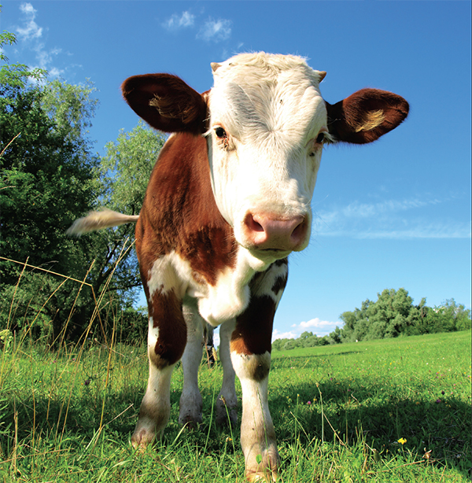
“Agriculture is our wisest pursuit, because it will in the end contribute most to real wealth, good morals, and happiness.”
—Letter from Thomas Jefferson to George Washington (1787)
Raising chickens in your yard will give you access to fresh eggs and meat, and since chickens are some of the easiest creatures to keep, even families in urban areas are able to raise a few in a small backyard. Four or five chickens will supply your whole family with eggs on a regular basis.
Housing Your Chickens
You will need to have a structure for your chickens to live in—to protect them from predators and inclement weather, and to allow the hens a safe place to lay their eggs. See page 382 for several types of structures you can make for housing your chickens and other poultry.
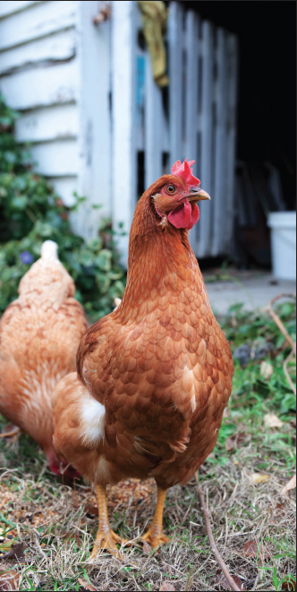
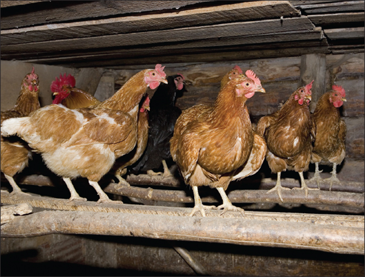
Building a chicken coop close to your house will make it easier to tend the chickens and gather eggs in inclement weather.
Placing your henhouse close enough to your own home will remind you to visit it frequently to feed the chickens and to gather eggs. It is best to establish the house and yard in dry soil and to stay away from areas in your yard that are frequently damp or moist, as this is the perfect breeding ground for poultry diseases. The henhouse should be well-ventilated, warm, protected from the cold and rain, have a few windows that allow sunlight to shine in (especially if you live in a colder climate), and have a sound roof.
The perches in your henhouse should not be more than 2½ feet above the floor, and you should place a smooth platform under the perches to catch the droppings so they can easily be cleaned. Nesting boxes should be kept in a darker part of the house and should have ample space around them.
The perches in your henhouse can be relatively narrow and shouldn’t be more than a few feet from the floor.
A simple, movable chicken coop can be constructed out of two-by-fours and two wheels. The floor of the coop should have open slats so that the manure will fall onto the ground and fertilize the soil. An even simpler method is to construct a pen that sits directly on the ground, making sure that it has a roof to offer the chickens suitable shade. The pen can be moved once the area is well fertilized.
Selecting the Right Breed of Chicken
Take the time to select chickens that are well suited for your needs. If you want chickens solely for their eggs, look for chickens that are good egg-layers. Mediterranean poultry are good for first-time chicken owners as they are easy to care for and only need the proper food in order to lay many eggs. If you are looking to slaughter and eat your chickens, you will want to have heavy-bodied fowl (Asiatic poultry) in order to get the most meat from them. If you are looking to have chickens that lay a good amount of eggs and that can also be used for meat, invest in the Wyandottes or Plymouth Rock breeds. These chickens are not incredibly bulky but they are good sources of both eggs and meat.
Wyandottes have seven distinct varieties: Silver, White, Buff, Golden, and Black are the most common. These varieties are hardy and they are very popular in the United States. They are compactly built and lay excellent dark brown eggs. They are good sitters and their meat is perfect for broiling or roasting.
Plymouth Rock chickens have three distinct varieties: Barred, White, and Buff. They are the most popular varieties in the United States and are hardy birds that grow to a medium size. These chickens are good for laying eggs, roost well, and also provide good meat.
Chickens, like most creatures, need a balanced diet of protein, carbohydrates, vitamins, fats, minerals, and water. Chickens with plenty of access to grassy areas will find most of what they need on their own. However, if you don’t have the space to allow your chickens to roam free, commercial chicken feed is readily available in the form of mash, crumbles, pellets, or scratch. Or you can make your own feed out of a combination of grains, seeds, meat scraps or protein-rich legumes, and a gritty substance such as bone meal, limestone, oyster shell, or granite (to aid digestion, especially in winter). The correct ratio of food for a warm, secure chicken should be 1 part protein to 4 parts carbohydrates. Do not rely too heavily on corn as it can be too fattening for hens; combine corn with wheat or oats for the carbohydrate portion of the feed. Clover and other green foods are also beneficial to feed your chickens.
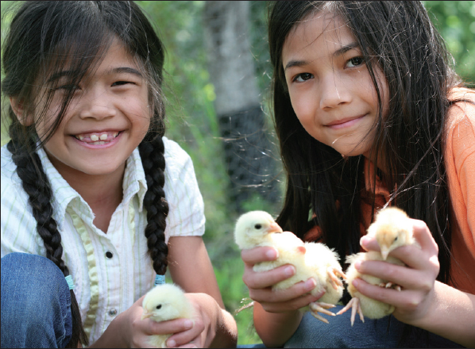
Chickens that are allowed to roam freely (“free-range” chickens) will be able to scavenge most of the food they need, as long as there is plenty of grass or other vegetation available.
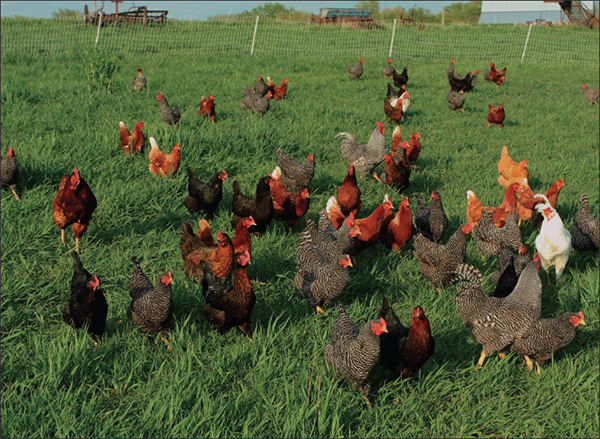
Chicken Feed
• 4 parts corn (or more in cold months)
• 3 parts oat groats
• 2 parts wheat
• 2 parts alfalfa meal or chopped hay
• 1 part meat scraps, fish meal, or soybean meal
• 2 to 3 parts dried split peas, lentils, or soybean meal
• 2 to 3 parts bone meal, crushed oyster shell, granite grit, or limestone
• ½ part cod-liver oil
You may also wish to add sunflower seeds, hulled barley, millet, kamut, amaranth seeds, quinoa, sesame seeds, flax seeds, or kelp granules. If you find that your eggs are thin-shelled, try adding more calcium to the feed (in the form of limestone or oystershell). Store feed in a covered bucket, barrel, or other container that will not allow rodents to get into it. A plastic or galvanized bucket is good, as it will also keep mold-causing moisture out of the feed.
How much food your chickens need will depend on breed, age, the season, and how much room they have to exercise. Often it’s easiest and best for the chickens to leave feed available at all times in several locations within the chickens’ range. This will ensure that even the lowest chickens in the pecking order get the feed they need.
Hatching Chicks
If you are looking to increase the number of chickens you have, or if you plan to sell some chickens at the market, you may want some of your hens to lay eggs and hatch chicks. In order to hatch a chick, an egg must be incubated for a sufficient amount of time with the proper heat, moisture, and position. The period for incubation varies based on the species of chicken. The average incubation period is around twenty-one days for most common breeds.
If you are only housing a few chickens in your backyard, natural incubation is the easiest method with which to hatch chicks. Natural incubation is dependent upon the instinct of the mother hen and the breed of hen. Plymouth Rocks and Wyandottes are good hens to raise chicks. It is important to separate the setting hen from the other chickens while she is nesting and to also keep the hen clean and free from lice. The nest should also be kept clean and the hens should be fed grain food, grit, and clean, fresh water.
It is important, when you are considering hatching chicks, to make sure your hens are healthy, have plenty of exercise, and are fed a balanced diet. They need materials on which to scratch and should not be infested with lice and other parasites. Free range chickens, which eat primarily natural foods and get lots of exercise, lay more fertile eggs than do tightly confined hens. The eggs selected for hatching should not be more than twelve days old and should be clean.
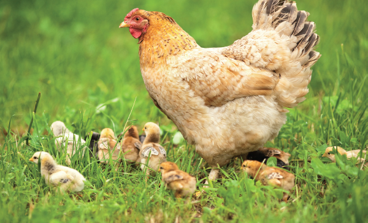
BACTERIA ASSOCIATED WITH CHICKEN MEAT
• Salmonella—This is primarily found in the intestinal tract of poultry and can be found in raw meat and eggs.
• Campylobacter jejuni—This is one of the most common causes of diarrheal illness in humans, and is spread by improper handling of raw chicken meat and not cooking the meat thoroughly.
• Listeria monocytogenes—This causes illness in humans and can be destroyed by keeping the meat refrigerated and by cooking it thoroughly.
STORING EGGS
Eggs are among the most nutritious foods on earth and can be part of a healthy diet. Hens typically lay eggs every twenty-five hours, so you can be sure to have a fresh supply on a daily basis, in many cases. But eggs, like any other animal by-product, need to be handled safely and carefully to avoid rotting and spreading disease. Here are a few tips on how to best preserve your farm-fresh eggs:
1. Make sure your eggs come from hens that have not been running with roosters. Infertile eggs last longer than those that have been fertilized.
2. Keep the fresh eggs together.
3. Choose eggs that are perfectly clean.
4. Make sure not to crack the shells, as this will taint the taste and make the egg rot much quicker.
5. Place your eggs directly in the refrigerator where they will keep for several weeks.
You’ll need to construct a nesting box for the roosting hen and the incubated eggs. The box should be roomy and deep enough to retain the nesting material. Treat the box with a disinfectant before use to keep out lice, mice, and other creatures that could infect the hen or the eggs. Make the nest of damp soil a few inches deep placed in the bottom of the box, and then lay sweet hay or clean straw on top of that.
Place the nesting box in a quiet and secluded place away from the other chickens. If space permits, you can construct a smaller shed in which to house your nesting hen. A hen can generally sit on anywhere between nine and fifteen eggs. The hen should only be allowed to leave the nest to feed, drink water, and take a dust bath. When the hen does leave her box, check the eggs and dispose of any damaged ones. An older hen will generally be more careful and apt to roost than a younger female.
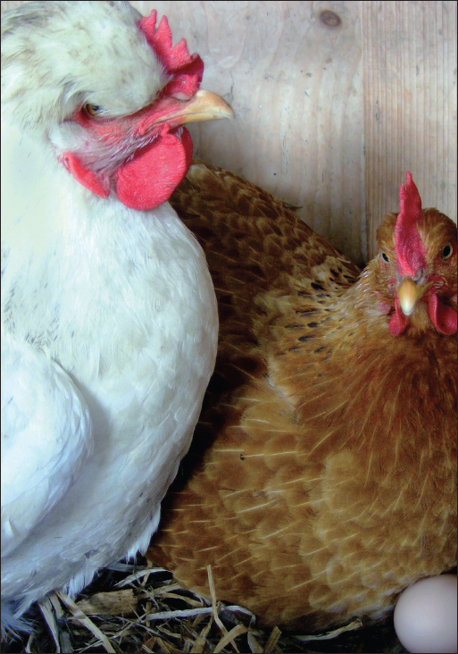
Once the chicks are hatched, they will need to stay warm and clean, have lots of exercise, and have access to food regularly. Make sure the feed is ground finely enough that the chicks can easily eat and digest it. They should also have clean, fresh water.
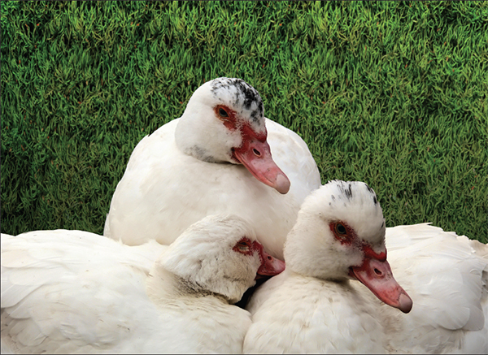
Ducks tend to be somewhat more difficult than chicks to raise, but they do provide wonderful eggs and meat. Ducks tend to have pleasanter personalities than chickens and are often prolific layers. The eggs taste similar to chicken eggs, but are usually larger and have a slightly richer flavor. Ducks are happiest and healthiest when they have access to a pool or pond to paddle around in and when they have several other ducks to keep them company.
Breeds of Ducks
There are six common breeds of ducks: White Pekin, White Aylesbury, Colored Rouen, Black Cayuga, Colored Muscovy, and White Muscovy. Each breed is unique and has its own advantages and disadvantages.
1. White Pekin—The most popular breed of duck, these are also the easiest to raise. These ducks are hardy and do well in close confinement. They are timid and must be handled carefully. Their large frame gives them lots of meat and they are also prolific egg layers.
2. White Aylesbury—This breed is similar to the Pekin but the plumage is much whiter and they are a bit heavier than the former. They are not as popular in the United States as the White Pekin duck.
3. Colored Rouens—These darkly plumed ducks are also quite popular and fatten easily for meat purposes.
4. Black Cayuga and Muscovy breeds—These are American breeds that are easily raised but are not as productive as the White Pekin.
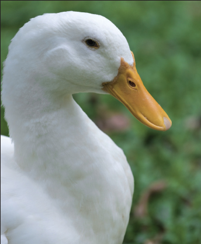
White Pekins were originally bred from the Mallard in China and came to the United States in 1873.
According to Mrs. Beeton in her Book of Household Management, published in 1861, "[Aylesbury ducks’] snowy plumage and comfortable comportment make it a credit to the poultry-yard, while its broad and deep breast, and its ample back, convey the assurance that your satisfaction will not cease at its death."
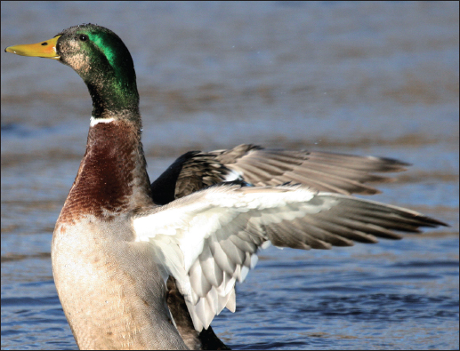
Housing Ducks
You don’t need a lot of space in which to raise ducks—nor do you need water to raise them successfully, though they will be happier if you can provide at least a small pool of water for them to bathe and paddle around in. Housing for ducks is relatively simple. The houses do not have to be as warm or dry as for chickens but the ducks cannot be confined for long periods as chickens can. They need more exercise out of doors in order to be healthy and to produce more eggs. A house that is protected from dampness or excess rain water and that has straw or hay covering the floor is adequate for ducks. If you want to keep your ducks somewhat confined, a small fence about 2½ feet high will do the trick. Ducks don’t require nesting boxes, as they lay their eggs on the floor of the house or in the yard around the house.
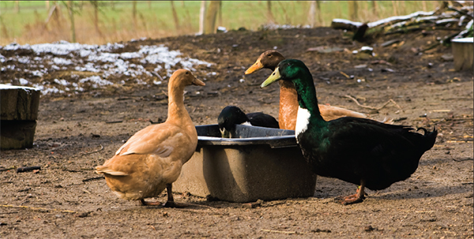
A Black Cayuga (bottom) stands with two Saxony ducks.
Feeding and Watering Ducks
Ducks require plenty of fresh water to drink, as they have to drink regularly while eating. Ducks eat both vegetable and animal foods. If allowed to roam free and to find their own food stuff, ducks will eat grasses, small fish, and water insects (if streams or ponds are provided).
Ducks need their food to be soft and mushy in order for them to digest it. Ducklings should be fed equal parts corn meal, wheat bran, and flour for the first week of life. Then, for the next fifty days or so, the ducklings should be fed the above mixture in addition to a little grit or sand and some green foods (green rye, oats, clover) all mixed together. After this time, ducks should be fed on a mixture of 2 parts cornmeal, 1 part wheat bran, 1 part flour, some coarse sand, and green foods.
Hatching Ducklings
The natural process of incubation (hatching ducklings underneath a hen) is the preferred method of hatching ducklings. It is important to take good care of the setting hen. Feed her whole corn mixed with green food, grit, and fresh water. Placing the feed and water just in front of the nest for the first few days will encourage the hen to eat and drink without leaving the nest. Hens will typically lay their eggs on the ground, in straw or hay that is provided for them. Make sure to clean the houses and pens often so the laying ducks have clean areas in which to incubate their eggs.
Caring for Ducklings
Young ducklings are very susceptible to atmospheric changes. They must be kept warm and free from getting chilled. The ducklings are most vulnerable during the first three weeks of life; after that time, they are more likely to thrive to adulthood. Construct brooders for the young ducklings and keep them very warm by hanging strips of cloth over the door cracks. After three weeks in the warm brooder, move the ducklings to a cold brooder as they can now withstand fluctuating temperatures.
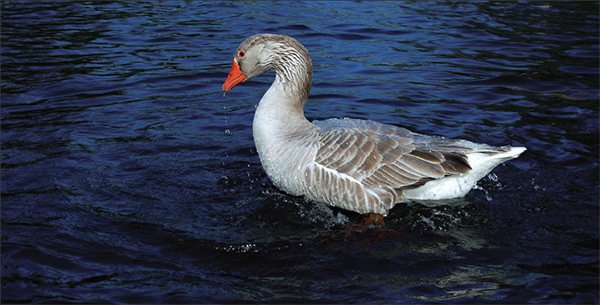
Common Diseases
On a whole, ducks are not as prone to the typical poultry diseases, and many of the diseases they do contract can be prevented by making sure the ducks have a clean environment in which to live (by cleaning out their houses, providing fresh drinking water, and so on).
Two common diseases found in ducks are botulism and maggots. Botulism causes the duck’s neck to go limp, making it difficult or even impossible for the duck to swallow. Maggots infest the ducks if they do not have any clean water in which to bathe, and are typically contracted in the hot summer months. Both of these diseases (as well as worms and mites) can be cured with the proper care, medications, and veterinary assistance.
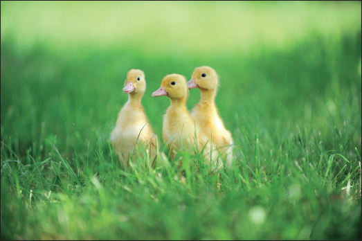
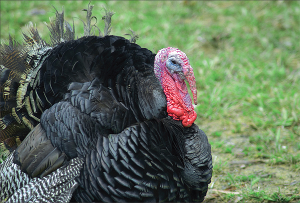
Bronze turkeys like this one are some of the most common in the United States.
Turkeys are generally raised for their meat (especially for holiday roasts) though their eggs can also be eaten. Turkeys are incredibly easy to manage and raise as they primarily subsist on bugs, grasshoppers, and wasted grain that they find while wandering around the yard. They are, in a sense, self-sustaining foragers.
If you are looking to raise a turkey for Thanksgiving dinner, it is best to hatch the turkey chick in early spring, so that by November, it will be about 14 to 20 pounds.
Breeds of Turkeys
The largest breeds of turkeys found in the United States are the Bronze and Narragansett. Other breeds, though not as popular, include the White Holland, Black turkey, Slate turkey, and Bourbon Red.
Bronze breeds are most likely a cross between a wild North American turkey and domestic turkey, and they have beautiful rich plumage. This is the most common type of turkey to raise, as it is the largest, is very hardy, and is the most profitable. The White Holland and Bourbon Red, however, are said to be the most “domesticated” in their habits and are easier to keep in a smaller roaming area.
Housing Turkeys
Turkeys flourish when they can roost in the open. They thrive in the shelter of trees, though this can become problematic as they are more vulnerable to predators than if they are confined in a house. If you do build a house for them, it should be airy, roomy, and very clean.
It is important to allow turkeys freedom to roam; if you live in a more suburban or neighborhood area, raising turkeys may not be the best option for you, as your turkeys may wander into a neighboring yard, upsetting your neighbors. Turkeys need lots of exercise to be healthy and vigorous. When turkeys are confined for large periods of time, it is more difficult to regulate their feeding (turkeys are natural foragers and thrive best on natural foods), and they are more likely to contract disease than if they are allowed to range freely.
What Do Turkeys Eat?
Turkeys gain most of their sustenance from foraging, either in lawns or in pastures. They typically eat green vegetation, berries, weed seeds, waste grain, nuts, and various kinds of acorns. In the summer months, turkeys especially like to get grasshoppers. Due to their love of eating insects that can damage crops and gardens, turkeys are quite useful in keeping your growing produce free from harmful insects and parasites.
Turkeys may be fed grain (similar to a mixture given to chickens) if they are going to be slaughtered, in order to make them larger.
Hatching Turkey Chicks
Turkey hens lay eggs in the middle of March to the first of April. If you are looking to hatch and raise turkey chicks, it is vital to watch the hen closely for when she lays the eggs, and then gather them and keep the eggs warm until the weather is more stable. Turkey hens generally aim to hide their nests from predators. It is best, for the hen’s sake, to provide her with a coop of some sort, which she can freely enter and leave. Or, if no coop is available, encourage the hen to lay her eggs in a nest close to your house (putting a large barrel on its side and heaping up brush near the house may entice the hen to nest there). This way, you can keep an eye on the eggs and hatchlings.
Hens are well adapted to hatch all of the eggs that they lay. It takes twenty-seven to twenty-one days for turkey eggs to hatch. While the hens are incubating the eggs, they should be given adequate food and water, placed close to their nest. Wheat and corn are the best food during the laying and incubation period.
Raising the Poults
Turkey chicks, also known as “poults,” can be difficult to raise and require lots of care and attention for their first few weeks of life. In this sense, a turkey raiser must be “on call” to come to the aid of the hen and her poults at any time during the day for the first month or so. Many times, the hens can raise the poults quite well, but it is important that they receive enough food and warmth in the early weeks to allow them to grow healthy and strong. The poults should stay dry, as they become chilled easily. If you are able, encouraging the poults and their mother into a coop until the poults are stronger will aid their growth to adulthood.
Poults should be fed soft and easily digestible foods. Stale bread, dipped in milk and then dried until it crumbles, is an excellent source of food for the young turkeys.
Diseases
Turkeys are hardy birds but they are susceptible to a few debilitating or fatal diseases. It is a fact that the mortality rate among young turkeys, even if they are given all the care and exercise and food needed, is relatively high (usually due to environmental and predatory factors).
The most common disease in turkeys is blackhead. Blackhead typically infects young turkeys between six weeks and four months old. This disease will turn the head darker colored or even black and the bird will become very weak, will stop eating, and will have an insatiable thirst. Blackhead is usually fatal.
Another disease that turkeys occasionally contract is roup. Roup generally occurs when a turkey has been exposed to extreme dampness or cold drafts for long periods of time. Roup causes the turkey’s head to swell around the eyes and is highly contagious to other turkeys. Nutritional roup is caused by a vitamin A deficiency, which can be alleviated by adding vitamin A to the turkeys’ drinking water. It is best to consult a veterinarian if your turkey seems to have this disease.
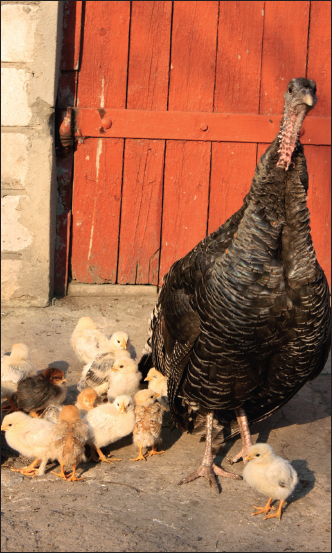
SLAUGHTERING POULTRY
If you are raising your own poultry, you may decide that you’d like to use them for consumption as well. Slaughtering your own poultry enables you to know exactly what is in the meat you and your family are consuming, and to ensure that the poultry is kept humanely before being slaughtered. Here are some guidelines for slaughtering poultry:
1. To prepare a fowl for slaughter, make sure the bird is secured well so it is unable to move (either hanging down from a pole or laid on a block that is used for chopping wood).
2. Killing the fowl can be done in two ways: one way is to hang the bird upside down and to cut the jugular vein with a sharp knife. It is a good idea to have a funnel or vessel available to collect the draining blood so it does not make a mess and can be disposed of easily. The other option is to place the bird’s head on a chopping block and then, in one clean movement, chop its head off at the middle of the neck. Then, hang the bird upside down and let the blood drain as described above.
3. Once the bird has been thoroughly drained of blood, you can begin to pluck it. Have a pot of hot water (around 140ºF) ready, into which to dip the bird. Holding the bird by the feet, dip it into the pot of hot water and leave it for about forty-five seconds—you do not want the bird to begin to cook! Then, remove the bird from the pot and begin plucking immediately. The feathers should come off fairly easily, but this process takes time, so be patient. Discard the feathers.
4. Once the bird has been completely rid of feathers, slip back the skin from the neck and cut the neck off close to the base of the body. Then, remove the crop, trachea, and esophagus from the bird by loosening them and pulling them out through the hole created from chopping off the neck. Cut off the vent to release the main entrails (being careful not to puncture the intestines or bacteria could be released into the meat) and make a horizontal slit about an inch above it so you can insert two fingers. Remove the entrails, liver (carefully cutting off the gallbladder), gizzard, and heart from the bird and set the last three aside if you want to eat them later or make them into stuffing. If you are going to save the heart, slip off the membrane enclosing it and cut off the veins and arteries. Make sure to clean out the gizzard as well if you will be using it later.
5. Wash the bird thoroughly, inside and out, and wipe it dry.
6. Cut off the feet below the joints and then carefully pull out the tendons from the drumsticks.
7. Once the carcass is thoroughly dry and clean, store it in the refrigerator if it will be used that same day or the next. If you want to save the bird for later use, place it in a moisture-proof bag and set it in the freezer (along with any innards that you may have saved).
8. Make sure you clean and disinfect any surface you were working on to avoid the spread of bacteria and other diseases.
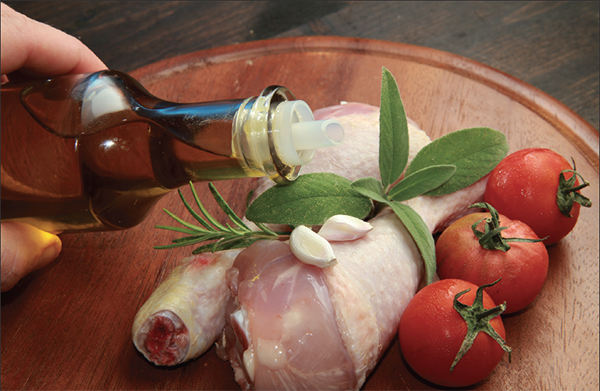
Rabbits are very social and docile animals, and easy to maintain. They like to play, but because of their skittish nature, are not necessarily the best pets for young children. Larger rabbits, bred for eating, often make good pets because of their more relaxed personalities. Rabbits are easier to raise than chickens and can provide you with beautiful fur and lean meat. In fact, rabbits will take up less space and use less money than chickens.
Breeds
There are over forty breeds of domestic rabbits. Below are ten of the most commonly owned varieties, along with their traits and popular uses.
1. Californian: 6–10 lbs. Short fur. Relaxed personality. Choice for eating.
2. Dutch: 3–5 lbs. Short fur. Relaxed personality. Choice pet. Good for young children.
3. Flemish Giant: 9+ lbs. Medium-length fur. Calm personality. Choice for eating.
4. Holland Lop: 3–5 lbs. Medium-length fur. Curious personality. Choice pet. One of the lop-eared rabbits, its ears flop down next to its face. A similar popular breed is the American Fuzzy Lop.
5. Jersey Wooly: 2–4 lbs. Long fur. Relaxed personality. Choice pet.
6. Mini Lop: 4–7 lbs. Medium-length fur. Relaxed personality. Choice pet. Lop-eared. Some reports of higher biting tendencies.
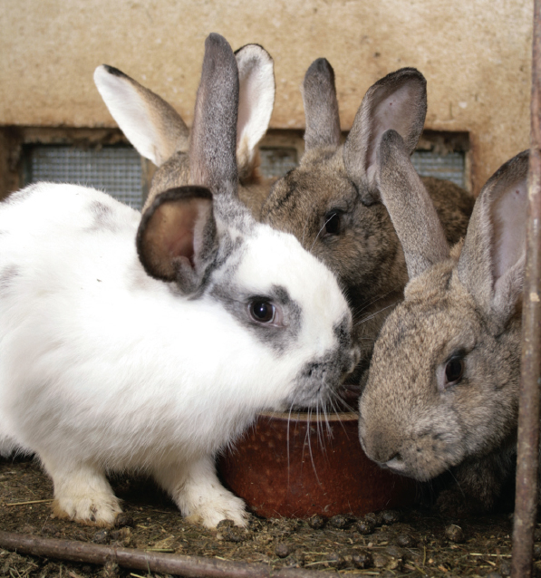
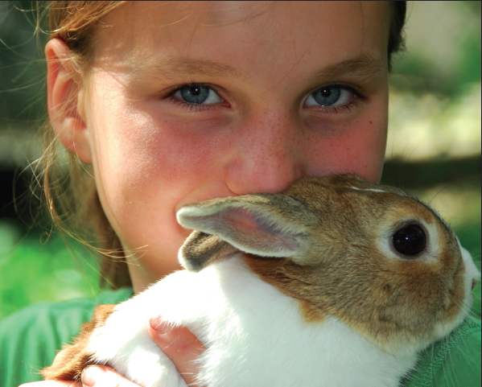
7. Mini Rex: 3–5 lbs. Very short, velvety fur. Curious personality. Choice pet. Tend to have sharp toenails.
8. Netherland Dwarf: 2–4 lbs. Medium-length fur. Excitable personality. Choice pet.
9. New Zealand: 9+ lbs. Short fur. Curious personality. Choice for eating. Variable reputation for biting.
10. Satin: 9+ lbs. Medium-length fur. Relaxed personality. Fur is finer and denser than other furs.
Housing
Rabbits should be kept in clean, dry, spacious homes. You will need a hutch, similar to a henhouse, to house your rabbits. It is important to provide your rabbits with lots of air. The best hutch will have a wide, over-hanging roof and is elevated about six inches off the ground. This way, your rabbits will not only have shade, but their homes will be prevented from getting damp.
A rabbit’s diet should be made up of three things: a small portion pellets (provided they are high in fiber), a continual source of hay, and vegetables. Rabbits love vegetables that are dark and leafy or root vegetables. Avoid feeding them beans or rhubarb, and limit the amount of spinach they eat. If you want to give rabbits a treat, try a small piece of fruit, such as a banana or apple. Remember that all of their food needs to be fresh (pellets should not be more than six weeks old), and like all other animals, be careful not to overfeed them. Also, to keep them from dehydrating, provide them with plenty of clean water every day.
Note: If you have a pregnant doe, allow her to eat a little more than usual.
Breeding
When you want to breed rabbits, put a male and female together in the morning or evening. After they have mated, you may separate them again. A female’s gestation period is approximately a month in length, and litters range from six to ten babies. Baby rabbits’ eyes will not open until two weeks after birth. Their mother will nurse them for a month, and for at least the first week, you must not touch any of the litter; you can alter their smell and the mother may stop feeding them. At two months, babies should be weaned from their mother, and at four months, or approximately 4.5 pounds, they are old enough to sell, eat, or continue breeding. Larger rabbit varieties may take six to twelve months to sexually mature.
Health Concerns
The main issues that may arise in your rabbits’ health are digestive problems and bacterial infections. Monitor your rabbit’s droppings carefully. Diarrhea in rabbits can be fatal. Some diarrhea is easy to identify, but also be on the lookout for droppings that are misshapen, softer in consistency, a lack of droppings altogether, and loud tummy growling. Diarrhea requires antibiotics from your veterinarian. In bacterial infections, your rabbit may have a runny nose or eyes, a high temperature, or a rattling or coughing respiratory noise. This also requires medical attention and an antibiotic specific to the type of infection.
Hairballs are another issue you may encounter and also require some attention. Every three months, rabbits shed their hair, and these sheds will alter between light and heavy. Since rabbits will attempt to groom themselves as cats do, but cannot vomit hair as cats can, you must groom them additionally, to prevent too much hair ingestion. Brush and comb them when their shedding begins, and provide them with ample fresh hay and opportunity for exercise. The fiber in the hay will help the hair to pass through their digestive tracts, and the exercise will keep their metabolisms active.
If your rabbit has badly misaligned teeth, they may interfere with his or her ability to eat and will need to be trimmed by the veterinarian.
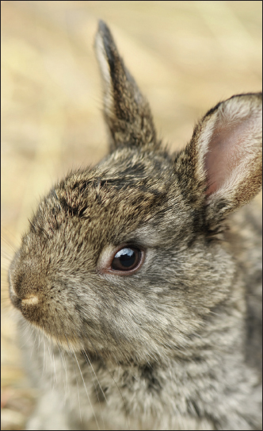
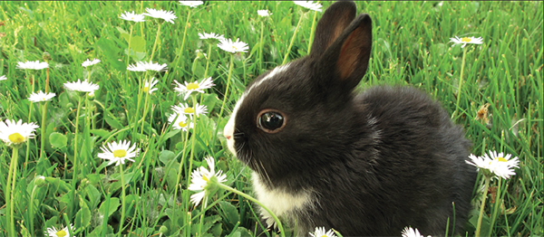
Never give your rabbit amoxicillin or use cedar or pine shavings in their hutches. Penicillin-based drugs carry high risks for rabbits, and the shavings emit a carbon that can cause respiratory or liver damage to small animals like rabbits.
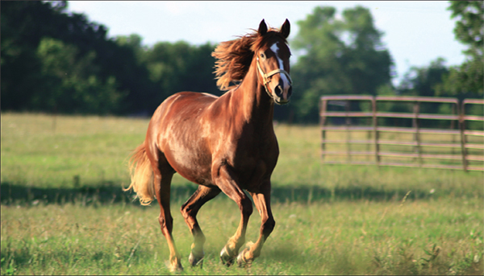
A horse can be a chauffeur (whether you’re in a saddle or in a carriage trailing behind), a farmer’s best friend when the fields need to be plowed, a spotlight-loving performer, and most importantly, an incredible pet and companion. The versatility of horses is what makes them such appealing animals. Yet with their great size, comes even greater responsibility. Horses have very specific needs: their living quarters, their diet, their exercise regimen, and their grooming, to name a few. They are complicated animals, but if taken care of the correct way, all the reaped rewards will absolutely be worth the work.
Breeds of Horses
There are hundreds of horse breeds, from the rare Abtenauer bred in a secluded valley just south of Salzburg, Austria, to the elegant Zweibrücken hailing from Germany. While it is fascinating to really explore all the differences in each breed, it is more practical to break the breeds up into three main categories based on their body type. The first two are “light horses” and “draft horses”; light horses are used for undemanding work and for their speed, whereas draft horses are able to complete more arduous tasks. You are likely to see light horses galloping around a racetrack or in a dressage show, while draft horses and their carriages are a popular method of transportation for princesses or, more likely, tourists in New York’s Central Park. The final type of horse is a pony, sizing in at a mere 14.2 hands or under. Ponies have always been especially popular amongst children.
1. Light horses—An example of a light horse is the Thoroughbred. This breed’s native home is England, where their human counterparts have fostered racing for over a thousand years. They have slender necks, deep, wide chests with long, slanting shoulders, and hind quarters that are high and muscular. Their legs are long and they end in rounded, well-shaped feet. Their lithe, angular bodies favor speed and are in complete opposition to a draft horse.
2. Draft horses—A Clydesdale is a well known draft breed. Bred in Scotland and later imported to America, this horse is famous for its intimidating size and its gigantic, hairy feet. Clydesdales are tall, and long limbed; they have medium-sized necks joining with slanting shoulders that meet strong legs, heavily fringed below the knee. This hair was often criticized by horsemen as being a fault of the breed; it was too hard to keep clean and free of disease, but many are fans of the defining characteristic.
3. Ponies—A Shetland pony is one of the more popular breeds. Shetlands resemble small draft horses, with their foretops, manes, and tails heavy and long. Being tinier than other horses, a pony is a great option for a child learning how to ride—they are exceedingly intelligent and can be readily trained.
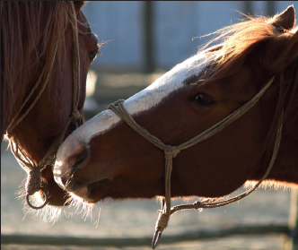
Figure out what you want to do with your horse before you select a breed; if you want your horse to be ridden, who will be the primary rider? Do you plan on leisurely trail rides or do you want your horse to be a racer? Once you figure these things out you can narrow down your choices. For many people, especially if they are new to having horses, the breed is not necessarily the deciding factor. Most care more about a horse’s personality and how well-trained or how green the horse is. If selecting a horse to begin breeding, then the breed would obviously have to be taken into deep consideration.
Housing
Horses should have some kind of shelter; all horses need to be protected from inclement weather. Housing can be indoor or outdoor, or even a combination of the two. It is decided by the use of the horse on a day-to-day basis. Indoor housing is ideal for horses that are being ridden or used every day in the winter time. The size of the stall should be around 12 x 12, which is the industry standard, but if you are housing a draft horse then the dimensions should be increased to 16 x 16. Horses should be provided with bedding for their stall (different types of straw or shavings); they need a dry, soft bed. Their bedding should also be kept fresh and clean, which means cleaning the stall daily and removing soiled bedding and manure. If an owner neglects the horse’s stall, it lessens the comfort and promotes disease. Outdoor housing has a myriad of advantages, for example lower construction costs and less labor where cleaning the building is concerned. The building should be a three-sided structure, like a run-in shed.
Grooming
Unlike other farm animals, horses must be groomed. Without grooming, a horse is susceptible to discomfort and diseases; this includes taking care of a horse’s hooves because feet are the horse’s most complicated structures, and the most integral to look after. A horse’s hooves should be cleaned (with a pick) every day, before and after riding or being sent out to do work. The feet are the most liable to injury from the effects of hard work and mismanagement, and subsequently, there is no body part that more requires care in both health and disease. Prevention, in the foot’s case, is much better than cure. It is also a good idea to get the horse shoes, which prevent the hoof from wearing down—a hoof wears down faster than it grows back. A stable horse should be thoroughly groomed each day, before and after the horse’s work; it is necessary to scrub away the “scurf” (the small shreds of epidermis that are continually exfoliated from the skin) that obstructs the pores. Doing so admits free perspiration and promotes circulation to the extremities. Cleaning and rubbing the skin is obviously important, but it is also imperative for the legs and feet because it preserves soundness.
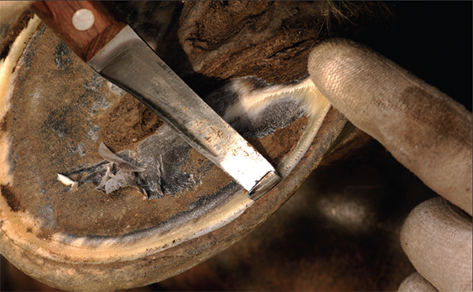
With horses, it is unnecessary to limit the amount of water; it should be left up to the horse’s discretion. He will take only as much as he wants. Food, however, is a different story. Horses can be overfed with hay (horses will eat it just for the amusement) and with their oats or grain. They should be fed according to however much they work—a work horse would be fed a more substantial amount than an idle horse, for example. If a horse is continually overfed, its appetite will eventually increase and, of course, the horse will become overweight. Horses should be fed regularly, at a scheduled time, as they anticipate the hour they will be fed and will become nervous it is too long delayed. As for what to feed horses—oats have been proven especially great for them; they favor speed and endurance more than any other food. If oats are too expensive, grains like barley, wheat, rye, and bran can be substituted. Horses are sometimes even known to eat corn. It should also be noted that if one is changing a horse’s feed, it needs to be gradual, otherwise, there could be digestive problems.
Breeding
For horse owners, the idea of breeding from their own mare has much appeal. The prospect of producing a foal with qualities similar to its mother, or even better, has many attractions.
Before any breeding decisions are made, it is best to have knowledge about normal breeding behavior, what should happen at foaling, and how a newborn foal should behave and develop is essential. For this reason, it is best for a novice horse breeder to seek professional help with mating and foaling from a stud.
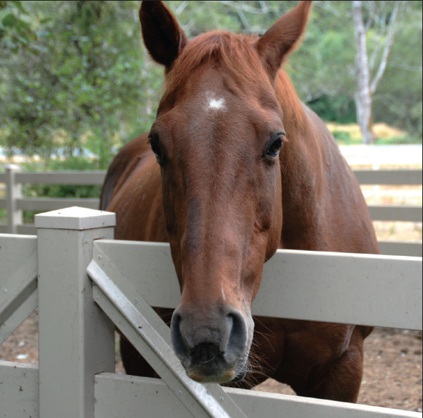
Common Diseases
One of the most common, and most dangerous, diseases a horse can contract is colic. Colic is a broad term that covers any acute gastrointestinal problem: colic could be anything from a stomachache or cramp from changing food too fast to impaction of waste in a horse’s intestines. Colic can be fatal; it is the leading cause of premature death among domesticated horses, and therefore if an owner suspects his or her horse has colic, it is absolutely necessary to call a vet. Some symptoms of colic are restlessness, lying down, kicking with the hind feet upward and toward the belly, jerky swishing of the tail, groaning, frequent position changes, and stretching as if to urinate, but with greater intensity, the movements become violent: the horse may throw himself down, roll, assume unnatural positions (for example, sitting on his haunches), and grunt loudly. With colic, the pain is not constant, so during the periods of peace, the horse may act completely normal. However, during the periods of pain, the horse will be sweating profusely.
As stated earlier, it is imperative that the owner takes care of their horses sensitive hooves. There are many diseases that result from neglected feet. One common disease is Laminitis, where the horse’s digital laminae (attached to the hoof wall and coffin bone) become inflamed. It will eventually become impossible for the horse to walk without pain. It is impossible to discern that a horse has laminitis without radiographs (so if an owner suspects it, they should consult a vet); but the owner should be wary of laminitis if the horse has any of the following symptoms: sweating, increased vital signs, and a tendency to favor the afflicted foot.
Founder is not a disease, exactly, but a complication of many horse diseases. Founder occurs when a disease (like laminitis) goes untreated for a very long time. What will happen is that the coffin bone will sink through the frog of the hoof making moving, and even standing, impossible without extreme pain and discomfort. A horse that founders and refuses to stand could very likely end up with colic—and that means the horse is in a lot of danger of dying. Any horses that founder will need constant attention and possibly even hospitalization in an equine clinic.
Beekeeping (also known as apiculture) is one of the oldest human industries. For thousands of years, honey has been considered a highly desirable food. Beekeeping is a science and can be a very profitable employment; it is also a wonderful hobby for many people in the United States. Keeping bees can be done almost anywhere—on a farm, in a rural or suburban area, and even, at times, in urban areas (even on rooftops!). Anywhere there are sufficient flowers from which to collect nectar, bees can thrive.
Apiculture relies heavily on the natural resources of a particular location and the knowledge of the beekeeper in order to be successful. Collecting and selling honey at your local farmers’ market or just to family and friends can supply you with some extra cash if you are looking to make a profit from your apiary.
Why Raise Bees?
Bees are essential in the pollination and fertilization of many fruit and seed crops. If you have a garden with many flowers or fruit plants, having bees nearby will only help your garden flourish and grow year after year. Furthermore, nothing is more satisfying than extracting your own honey for everyday use.
How to Avoid Getting Stung
Though it takes some skill, you can learn how to avoid being stung by the bees you keep. Here are some ways you can keep your bee stings to a minimum:
1. Keep gentle bees. Having bees that, by sheer nature, are not as aggressive will reduce the number of stings you are likely to receive. Carniolan bees are one of the gentlest species, and so are the Caucasian bees introduced from Russia.
2. Obtain a good “smoker” and use it whenever you’ll be handling your bees. Pumping smoke of any kind into and around the beehive will render your bees less aggressive and less likely to sting you.
3. Purchase and wear a veil. This should be made out of black bobbinet and worn over your face. Also, rubber gloves help protect your hands from stings.
4. Use a “bee escape.” This device is fitted into a slot made in a board the same size as the top of the hive. Slip the board into the hive before you open it to extract the honey, and it allows the worker bees to slip below it but not to return back up. So, by placing the “bee escape” into the hive the day before you want to gain access to the combs and honey, you will most likely trap all the bees under the board and leave you free to work with the honeycombs without fear of stings.
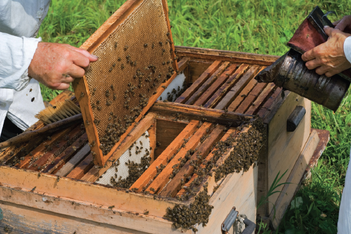
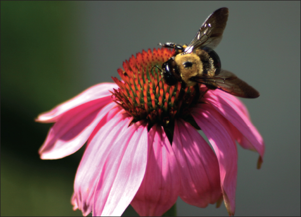
What Type of Hive Should I Build?
Most beekeepers would agree that the best hives have suspended, moveable frames where the bees make the honeycombs, which are easy to lift out. These frames, called Langstroth frames, are the most popular kind of frame used by apiculturists in the United States.
Whether you build your own beehive or purchase one, it should be built strongly and should contain accurate bee spaces and a close-fitting, rainproof roof. If you are looking to have honeycombs, you must have a hive that permits the insertion of up to eight combs.
Where Should the Hive Be Situated?
Hives and their stands should be placed in an enclosure where the bees will not be disturbed by other animals or humans and where it will be generally quiet. Hives should be placed on their own stands at least 3 feet from each other. Do not allow weeds to grow near the hives and keep the hives away from walls and fences. You, as the beekeeper, want to be able to easily access your hive without fear of obstacles.
Swarming
Swarming is simply the migration of honeybees to a new hive and is led by the queen bee. During swarming season (the warm summer days), a beekeeper must remain very alert. If you see swarming above the hive, take great care and act calmly and quietly. You want to get the swarm into your hive, but this will be tricky. It they land on a nearby branch or in a basket, simply approach and then “pour” them into the hive. Keep in mind that bees will more likely inhabit a cool, shaded hive than one that is baking in the hot summer sun.
Sometimes it is beneficial to try to prevent swarming, such as if you already have completely full hives. Removing the new honey frequently from the hive before swarming begins will deter the bees from swarming. Shading the hives on warm days will also help keep the bees from swarming.
Bee Pastures
Bees will fly a great distance to gather food but you should try to contain them, as well as possible, to an area within 2 miles of the beehive. Make sure they have access to many honey-producing plants, which you can grow in your garden. Alfalfa, asparagus, buckwheat, chestnut, clover, catnip, mustard, raspberry, roses, and sunflowers are some of the best honey-producing plants and trees. Also make sure that your bees always have access to pure, clean water.
Preparing Your Bees for Winter
If you live in a colder region of the United States, keeping your bees alive throughout the winter months is difficult. If your queen bee happens to die in the fall, before a young queen can be reared, your whole colony will die throughout the winter. However, the queen’s death can be avoided by taking simple precautions and giving careful attention to your hive come autumn.
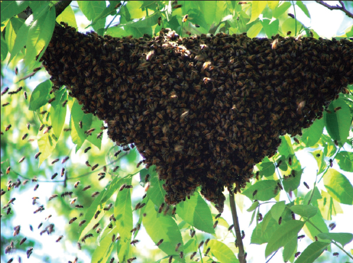
Colonies are usually lost in the winter months due to insufficient winter food storages, faulty hive construction, lack of protection from the cold and dampness, not enough or too much ventilation, or too many older bees and not enough young ones.
If you live in a region that gets a few weeks of severe weather, you may want to move your colony indoors, or at least to an area that is protected from the outside elements. But the essential components of having a colony survive through the winter season are to have a good queen; a fair ratio of healthy, young, and old bees; and a plentiful supply of food. The hive needs to retain a liberal supply of ripened honey and a thick syrup made from white cane sugar (you should feed this to your bees early enough so they have time to take the syrup and seal it over before winter).
To make this syrup, dissolve 3 pounds of granulated sugar in 1 quart of boiling water and add 1 pound of pure extracted honey to this. If you live in an extremely cold area, you may need up to 30 pounds of this syrup, depending on how many bees and hives you have. You can either use a top feeder or a frame feeder, which fits inside the hive in the place of a frame. Fill the frame with the syrup and place sticks or grass in it to keep the bees from drowning.
Extracting Honey
To obtain the extracted honey, you’ll need to keep the honeycombs in one area of the hive or packed one above the other. Before removing the filled combs, you should allow the bees ample time to ripen and cap the honey. To uncap the comb cells, simply use a sharp knife (apiary suppliers sell knives specifically for this purpose). Then put the combs in a machine called a honey extractor to extract the honey. The honey extractor whips the honey out of the cells and allows you to replace the fairly undamaged comb into the hive to be repaired and refilled.
The extracted honey runs into open buckets or vats and is left, covered with a tea towel or larger cloth, to stand for a week. It should be in a warm, dry room where no ants can reach it. Skim the honey each day until it is perfectly clear. Then you can put it into cans, jars, or bottles for selling or for your own personal use.
Making Beeswax
Beeswax from the honeycomb can be used for making candles, can be added to lotions or lip balm, and can even be used in baking. Rendering wax in boiling water is especially simple when you only have a small apiary.
Collect the combs, break them into chunks, roll them into balls if you like, and put them in a muslin bag. Put the bag with the beeswax into a large stockpot and bring the water to a slow boil, making sure the bag doesn’t rest on the bottom of the pot and burn. The muslin will act as a strainer for the wax. Use clean, sterilized tongs to occasionally squeeze the bag. After the wax is boiled out of the bag, remove the pot from the heat and allow it to cool. Then, remove the wax from the top of the water and then re-melt it in another pot on very low heat, so it doesn’t burn.
Pour the melted wax into molds lined with wax paper or plastic wrap and then cool it before using it to make other items or selling it at your local farmers’ market.
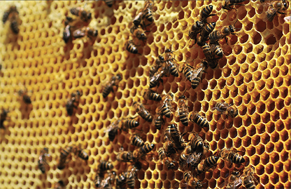
General Tips
1. Clip the old queen’s wings and go through the hives every ten days to destroy queen cells to prevent swarming.
2. Always act and move calmly and quietly when handling bees.
3. Keep the hives cool and shaded. Bees won’t enter a hot hive.
When Opening the Hive
1. Have a smoker ready to use if you desire.
2. Do not stand in front of the hive while the bees are entering and exiting.
3. Do not drop any tools into the hive while it’s open.
4. Do not run if you become frightened.
5. If you are attacked, move away slowly and smoke the bees off yourself as you retreat.
6. Apply ammonia or a paste of baking soda and water immediately to any bee sting to relieve the pain. You can also scrape the area of the bee sting with your fingernail or the dull edge of a knife immediately after the sting.
When Feeding Your Bees
1. Keep a close watch over your bees during the entire season, to see if they are feeding well or not.
2. Feed the bees during the evening.
3. Make sure the bees have ample water near their hive, especially in the spring.
Making a Beehive
The most important parts of constructing a beehive are to make it simple and sturdy. Just a plain box with a few frames and a couple of other loose parts will make a successful beehive that will be easy to use and manipulate. It is crucial that your beehive be well adapted to the nature of bees and also the climate where you live. Framed hives usually suffice for the beginning beekeeper. To the right is a diagram of a simple beehive that you can easily construct for your backyard beekeeping purposes.
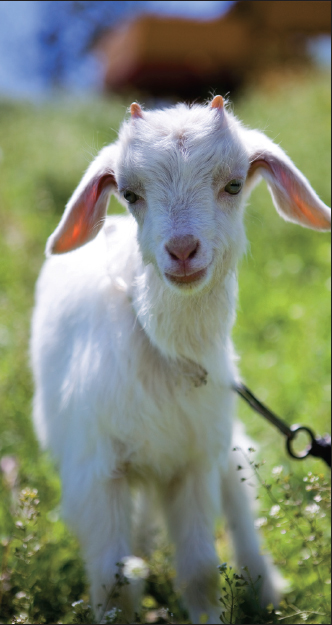
Goats provide us with milk and wool and thrive in arid, semitropical, and mountainous environments. In the more temperate regions of the world, goats are raised as supplementary animals, providing milk and cheese for families and acting as natural weed killers.
Breeds of Goats
There are many different types of goats. Some breeds are quite small (weighing roughly 20 pounds) and some are very large (weighing up to 250 pounds). Depending on the breed, goats may have horns that are corkscrew in shape, though many domestic goats are dehorned early on to lessen any potential injuries to humans or other goats. The hair of goats can also differ—various breeds have short hair, long hair, curly hair, silky hair, or coarse hair. Goats come in a variety of colors (solid black, white, brown, or spotted).
SIX MAJOR U.S. GOAT BREEDS
Alpine—Originally from Switzerland, these goats may have horns, are short haired, and are usually white and black in color. They are also good producers of milk.
Anglo-Nubian—A cross between native English goats and Indian and Nubian breeds, these goats have droopy ears, spiral horns, and short hair. They are quite tall and do best in warmer climates. They do not produce as much milk, though it is much higher in fat than other goats. They are the most popular breed of goat in the United States.
LaMancha—A cross between Spanish Murciana and Swiss and Nubian breeds, these goats are extremely adaptable, have straight noses, short hair, may have horns, and do not have external ears. They are not as good milk producers as the Saanen and Toggenburg breeds, and their milk fat content is much higher.
Pygmy—Originally from Africa and the Caribbean, these dwarfed goats thrive in hotter climates. For their size, they are relatively good producers of milk.
Saanen—Originally from Switzerland, these goats are completely white, have short hair, and sometimes have horns. Goats of this breed are wonderful milk producers.
Toggenburg—Originally from Switzerland, these goats are brown with white facial, ear, and leg stripes; have straight noses; may have horns; and have short hair. This breed is very popular in the United States. These goats are good milk producers in the summer and winter seasons and survive well in both temperate and tropical climates.
Feeding Goats
Goats can sustain themselves on bushes, trees, shrubs, woody plants, weeds, briars, and herbs. Pasture is the lowest cost feed available for goats, and allowing goats to graze in the summer months is a wonderful and economic way to keep goats, even if your yard is quite small. Goats thrive best when eating alfalfa or a mixture of clover and timothy. If you have a lawn and a few goats, you don’t need a lawn mower if you plant these types of plants for your goats to eat. The one drawback to this is that your goats (depending on how many you own) may quickly deplete these natural resources, which can cause weed growth and erosion. Supplementing pasture feed with other food stuff, such as greenchop, root crops, and wet brewery grains will ensure that your yard does not become overgrazed and that your goats remain well-fed and healthy. It is also beneficial to supply your goats with unlimited access to hay while they are grazing. Make sure that your goats have easy access to shaded areas and fresh water, and offer a salt and mineral mix on occasion.
Dry forage is another good source of feed for your goats. It is relatively inexpensive to grow or buy and consists of good quality legume hay (alfalfa or clover). Legume hay is high in protein and has many essential minerals beneficial to your goats. To make sure your forages are highly nutritious, be sure that there are many leaves that provide protein and minerals and that the forage had an early cutting date, which will allow for easier digestion of the nutrients. If your forage is green in color, it most likely contains more vitamin A, which is good for promoting goat health.
Goat Milk
Goat milk is a wonderful substitute for those who are unable to tolerate cow’s milk, or for the elderly, babies, and those suffering from stomach ulcers. Milk from goats is also high in vitamin A and niacin but does not have the same amount of vitamins B6, B12, and C as cow’s milk.
Lactating goats do need to be fed the best quality legume hay or green forage possible, as well as grain. Give the grain to the doe at a rate that equals ½ pound grain for every pound of milk she produces.
Common Diseases Affecting Goats
Goats tend to get more internal parasites than other herd animals. Some goats develop infectious arthritis, pneumonia, coccidiosis, scabies, liver fluke disease, and mastitis. It is advisable that you establish a relationship with a good veterinarian who specializes in small farm animals to periodically check your goats for various diseases.
Milking a goat takes some practice and patience, especially when you first begin. However, once you establish a routine and rhythm to the milking, the whole process should run relatively smoothly. The main thing to remember is to keep calm and never pull on the teat, as this will hurt the goat and she might upset the milk bucket. The goat will pick up on any anxiousness or nervousness on your part and it could affect how cooperative she is during the milking.
Supplies
• A grain bucket and grain for feeding the goat while milking is taking place
• Milking stand
• Metal bucket to collect the milk
• A stool to sit on (optional)
• A warm sterilized wipe or cloth that has been boiled in water
• Teat dip solution (2 tbsps bleach, 1 quart water, one drop normal dish detergent mixed together)
Directions
1. Ready your milking stand by filling the grain bucket with enough grain to last throughout the entire milking. Then retrieve the goat, separating her from any other goats to avoid distractions and unsuccessful milking. Place the goat’s head through the head hold of the milking stand so she can eat the grain and then close the lever so she cannot remove her head.
2. With the warm, sterilized wipe or cloth, clean the udder and teats to remove any dirt, manure, or bacteria that may be present. Then, place the metal bucket on the stand below the udder.
3. Wrap your thumb and forefinger around the base of one teat. This will help trap the milk in the teat so it can be squirted out. Then, starting with your middle finger, squeeze the three remaining fingers in one single, smooth motion to squirt the milk into the bucket. Be sure to keep a tight grip on the base of the teat so the milk stays there until extracted. Remember: the first squirt of milk from either teat should not be put into the bucket as it may contain dirt or bacteria that you don’t want contaminating the milk.
4. Release the grip on the teat and allow it to refill with milk. While this is happening, you can repeat this process on the other teat and can alternate between teats to speed up the milking process.
6. When the teats begin to look empty (they will be somewhat flat in appearance), massage the udder just a little bit to see if any more milk remains. If so, squeeze it out in the same manner as above until you cannot extract much more.
7. Remove the milk bucket from the stand and then, with your teat dip mixture in a disposable cup, dip each teat into the solution and allow to air dry. This will keep bacteria and infection from going into the teat and udder.
8. Remove the goat from the milk stand and return her to the pen.
Making Cheese from Goat Milk
Most varieties of cheese that can be made from cow’s milk can also be successfully made using goats’ milk. Goats’ milk cheese can easily be made at home. In order to make the cheese, however, at least one gallon of goat milk should be available. Make sure that all of your equipment is washed and sterilized (using heat is fine) before using it.
Cottage Cheese
1. Collect surplus milk that is free of strong odors. Cool it to around 40ºF and keep it at that temperature until it is used.
2. Skim off any cream. Use the skim milk for cheese and the cream for cheese dressing.
3. If you wish to pasteurize your milk (which will allow it hold better as a cheese) collect all the milk to be processed into a flat bottomed, straight-sided pan and heat to 145ºF on low heat. Hold it at this temperature for about thirty minutes and then cool to around 80ºF. Use a dairy thermometer to measure the milk’s temperature. Then, inoculate the cheese milk with a desirable lactic acid fermenting bacterial culture (you can use commercial buttermilk for the initial source). Add about 7 ounces to 1 gallon of cheese milk, stir well, and let it sit undisturbed for about ten to sixteen hours, until a firm curd is formed.
4. When the curd is firm enough, cut the curd into uniform cubes no larger than ½ inch using a knife or spatula.
5. Allow the curd to sit undisturbed for a couple of minutes and then warm it slowly, stirring carefully, at a temperature no greater than 135ºF. The curd should eventually become firm and free from whey.
6. When the curd is firm, remove from the heat and stop stirring. Siphon off the excess whey from the top of the pot. The curd should settle to the bottom of the container. If the curd is floating, bacteria that produces gas has been released and a new batch must be made.
7. Replace the whey with cold water, washing the curd and then draining the water. Wash again with ice-cold water from the refrigerator to chill the curd. This will keep the flavor fresh.
8. Using a draining board, drain the excess water from the curd. Now your curd is complete.
9. In order to make the curd into a cottage cheese consistency, separate the curd as much as possible and mix with a milk or cream mixture containing salt to taste.
Domiati Cheese
This type of cheese is made throughout the Mediterranean region. It is eaten fresh or aged two to three months before consumption.
1. Cool a gallon of fresh, quality milk to around 105ºF, adding 8 ounces of salt to the milk. Stir the salt until it is completely dissolved.
2. Pasteurize the milk as described in step 3 of the cottage cheese recipe.
3. Domiati cheese is coagulated by adding a protease enzyme (rennet). This enzyme may be purchased at a local drug store, health food store, or a cheese maker in your area. Dissolve the concentrate in water, add it to the cheese milk, and stir for a few minutes. Use 1 milliliter of diluted rennet liquid in forty milliliters of water for every 2½ gallons of cheese milk.
4. Set the milk at around 105ºF. When the enzyme is completely dispersed in the cheese milk, allow the mix to sit undisturbed until it forms a firm curd.
5. When the desired firmness is reached, cut the curd into very small cubes. Allow for some whey separation. After ten to twenty minutes, remove and reserve about a third of the volume of salted whey.
ANGORA GOATS
Angora goats may be the most efficient fiber producers in the world. The hair of these goats is made into mohair, a long, lustrous hair that is woven into fine garments. Angora goats are native to Turkey and were imported to the United States in the mid-1800s. Now, the United States is one of the two biggest producers of mohair on Earth.
Angora goats are typically relaxed and docile. They are delicate creatures, easily strained by their year-round fleeces. Angora goats need extra attention and are more high-maintenance than other breeds of goat. While these goats can adapt to many temperate climates, they do particularly well in the arid environment of the southwestern states.
Angora goats can be sheared twice yearly, before breeding and before birthing. The hair of the goat will grow about ¾ inch per month and it should be sheared once it reaches 4 to 6 inches in length. During the shearing process, the goat is usually lying down on a clean floor with its legs tied. When the fleece is gathered (it should be sheared in one full piece), it should be bundled into a burlap bag and should be free of contaminants. Mark your name on the bag and make sure there is only one bag per fleece. For more thorough rules and regulations about selling mohair through the government’s direct-payment program, contact the USDA Agricultural Stabilization and Conservation Service online or in one of their many offices.
Shearing can be accomplished with the use of a special goat comb, which leaves ¼ inch of stubble on the goat. It is important to keep the fleeces clean and to avoid injuring the animal. The shearing seasons are in the spring and fall. After a goat has been sheared, it will be more sensitive to changes in the weather for up to six weeks. Make sure you have proper warming huts for these goats in the winter and adequate shelter from rain and inclement weather.
6. Put the curd and remaining whey into cloth-lined molds (the best are rectangular stainless steel containers with perforated sides and bottom) with a cover. The molds should be between 7 and 10 inches in height. Fill the molds with the curd, fold the cloth over the top, allow the whey to drain, and discard the whey.
7. Once the curd is firm enough, apply added weight for ten to eighteen hours until it is as moist as you want.
8. Once the pressing is complete and the cheese is formed into a block, remove the molds, and cut the blocks into 4-inch-thick pieces. Place the pieces in plastic containers with airtight seals. Fill the containers with reserved salted whey from step 5, covering the cheese by about an inch.
9. Place these containers at a temperature between 60 and 65ºF to cure for one to four months.
Feta Cheese
This type of cheese is very popular to make from goats’ milk. The same process is used as the Domiati cheese except that salt is not added to the milk before coagulation. Feta cheese is aged in a brine solution after the cubes have been salted in a brine solution for at least twenty-four hours.
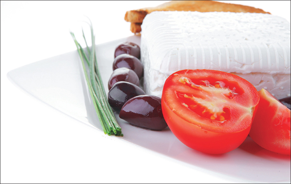
Sheep were possibly the first domesticated animals, and are now found all over the world on farms and smaller plots of land. Almost all the breeds of sheep that are found in the United States have been brought here from Great Britain. Raising sheep is relatively easy, as they only need pasture to eat, shelter from bad weather, and protection from predators. Sheep’s wool can be used to make yarn or other articles of clothing and their milk can be made into various types of cheeses and yogurt, though this is not normally done in the United States.
Sheep are naturally shy creatures and are extremely docile. If they are treated well, they will learn to be affectionate with their owner. If a sheep is comfortable with its owner, it will be much easier to manage and to corral into its pen if it’s allowed to graze freely. Start with only one or two sheep; they are not difficult to manage but do require a lot of attention.
Breeds of Sheep
There are many different breeds of sheep—some are used exclusively for their meat and others for their wool. Six quality wool-producing breeds are as follows:
1. Cotswold Sheep—This breed is very docile and hardy and thrives well in pastures. It produces around 14 pounds of fleece per year, making it a very profitable breed for anyone wanting to sell wool.
2. Leicester sheep—This is a hardy, docile breed of sheep that is a very good grazer. This breed has 6-inch-long, coarse wool that is desirable for knitting. It is a very popular breed in the United States.
3. Merino sheep—Introduced to the United States in the early twentieth century, this small- to medium-sized sheep has lots of rolls and folds of fine white wool and produces a fleece anywhere between 10 and 20 pounds. It is considered a fine-wool specialist, and though its fleece appears dark in color, the wool is actually white or buff. It is a wonderful foraging sheep, is hardy, and has a gentle disposition, but is not a very good milk producer.
4. Oxford Down sheep—A more recent breed, these dark-faced sheep have hardy constitutions and good fleece.
5. Shropshire sheep—This breed has longer, more open, and coarser fleece than other breeds. It is quite popular in the United States, especially in areas that are more moist and damp, as they seem to better in these climates than other breeds of sheep.
6. Southdown sheep—One of the oldest breeds of sheep, they are popular for their good quality wool and are deemed the standard of excellence for many sheep owners. Docile, hardy, and good grazing on pastures, their coarse and light-colored wool is used to make flannel.
Housing Sheep
Sheep do not require much shelter—only a small shed that is open on one side (preferably to the south so it can stay warmer in the winter months) and is roughly 6 to 8 feet high. The shelter should be ventilated well to reduce any unpleasant smells and to keep the sheep cool in the summer. Feeding racks or mangers should be placed inside of the shed to hold the feed for the sheep. If you live in a colder region of the country, building a sturdier, warmer shed for the sheep to live in during the winter is recommended.
Straw should be used for the sheep’s bedding and should be changed daily to make sure the sheep do not become ill from an unclean shelter. Especially for the winter months, a dry pen should be erected for the sheep to exercise in. The fences should be strong enough to keep out predators that may enter your yard and to keep the sheep from escaping.
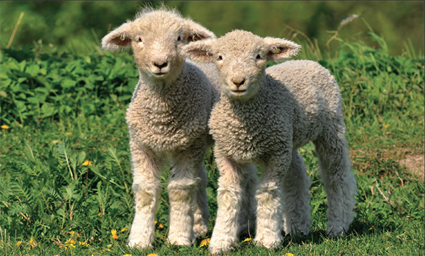
Sheep generally eat grass and are wonderful grazers. They utilize rough and scanty pasturage better than other grazing animals and, due to this, they can actually be quite beneficial in cleaning up a yard that is overgrown with un-desirable herbage. Allowing sheep to graze in your yard or in a small pasture field will provide them with sufficient food in the summer months. Sheep also eat a variety of weeds, briars, and shrubs. Fresh water should always be available for the sheep every time of year.
During the winter months especially, when grass is scarce, sheep should be fed on hay (alfalfa, legume, or clover hay) and small quantities of grain. Corn is also a good winter food for the sheep (it can also be mixed with wheat bran), and straw, salt, and roots can also be occasionally added to their diet. Good food during the winter season will help the sheep grow a healthier and thicker wool coat.
Shearing Sheep
Sheep are generally sheared in the spring or early summer before the weather gets too warm. To do your own shearing, invest in a quality hand shearer and a scale on which to weigh the fleece. An experienced shearer should be able to take the entire wool off in one piece.
You may want to wash the wool a few days to a week before shearing the sheep. To do so, corral the sheep into a pen on a warm spring day (make sure there isn’t a cold breeze blowing and that there is a lot of sunshine so the sheep does not become chilled). Douse the sheep in warm water, scrub the wool, and rinse. Repeat this a few times until most of the dirt and debris is out of the wool. Diffuse some natural oil throughout the wool to make it softer and ready for shearing.
The sheep should be completely dry before shearing and you should choose a warm—but not overly hot—day. If you are a beginner at shearing sheep, try to find an experienced sheep owner to show you how to properly hold and shear a sheep. This way, you won’t cause undue harm to the sheep’s skin and will get the best fleece possible. When you are hand-shearing a sheep, remember to keep the skin pulled taut on the part where you are shearing to decrease the potential of cutting the skin.
Once the wool is sheared, tag it and roll it up by itself, and then bind it with twine. Be sure not to fold it or bind it too tightly. Separate and remove any dirty or soiled parts of the fleece before binding, as these parts will not be able to be carded and used.
Carding and Spinning Wool
To make the sheared wool into yarn you will need only a few tools: a spinning wheel or drop spindle and wool-cards. Wool-cards are rectangular pieces of thin board that have many wire teeth attached to them (they look like coarse brushes that are sometimes used for dogs’ hair). To begin, you must clean the wool fleece of any debris, feltings, or other imperfections before carding it; otherwise your yarn will not spin correctly. Also wash it to remove any additional sand or dirt embedded in the wool and then allow it to dry completely. Then, all you need is to gather your supplies and follow these simple instructions:
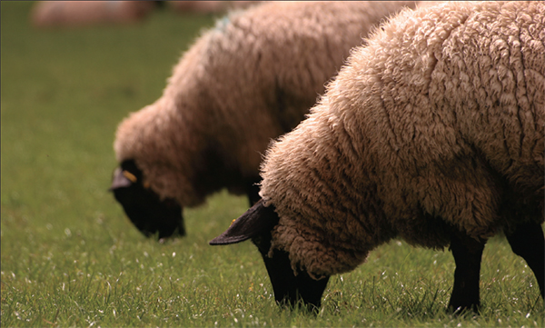
Carding Wool
1. Grease the wool with rape oil or olive oil, just enough to work into the fibers.
2. Take one wool-card in your left hand, rest it on your knee, gather a tuft of wool from the fleece, and place it onto the wool-card so it is caught between the wired teeth of the card.
3. Take the second wool-card in your right hand and bring it gently across the other card several times, making a brushing movement toward your body.
4. When the fibers are all brushed in the same direction and the wool is soft and fluffy to the touch, remove the wool by rolling it into a small fleecy ball (roughly a foot or more in length and only 2 inches in width) and put it in a bag until it is used for spinning.
Note: Carded wool can also be used for felting, in which case no spinning is needed. To felt a small blanket, place large amounts of carded wool on either side of a burlap sack. Using felting needles, weave the wool into the burlap until it is tightly held by the jute or hemp fabrics of the burlap.
Spinning Wool
1. Take one long roll of carded wool and wind the fibers around the spindle.
2. Move the wheel gently and hold the spindle to allow the wool to “draw,” or start to pull together into a single thread.
3. Keep moving the wheel and allow the yarn to wind around the spindle or a separate spool, if you have a more complex spinning wheel.
4. Keep adding rolls of carded wool to the spindle until you have the desired amount of yarn.
Note: If you are unable to obtain a spinning wheel of any kind, you can spin your carded wool by hand, although this will not produce the same tightness in your yarn as regular spinning. All you need to do is take the carded wool, hold it with one hand, and pull and twist the fibers into one, continuous piece. Winding the end of the yarn around a stick, spindle, or spool and securing it in place at the end will help keep your fibers tight and your yarn twisted.
If you want your yarn to be different colors, try dying it with natural berry juices or with special wool dyes found in arts and crafts stores.
Milking Sheep
Sheep’s milk is not typically used in the United States for drinking, making cheese, or other familiar dairy products. Sheep do not typically produce milk year-round, as cows do, so milk will only be produced if you bred your sheep and had a lamb produced. If you do have a sheep that has given birth and the lamb has been sold or taken away, it is important to know how to milk her so her udders do not become caked. Some ewes will still have an abundance of milk even after their lambs have been weaned and this excess milk should be removed to keep the ewe healthy and her udder free from infection.
To milk a ewe, secure her to a sturdy pole or hook with a short lead. Wash the utters gently to remove any contaminants. Place the milk bucket below the utters and squeeze the teats downward? rhythmically? until the milk begins to flow into the bucket. Allowing the ewe to eat from a feed bucket while being milked will help to keep her relaxed. Strain and refrigerate the milk immediately.
Diseases
The main diseases to which sheep are susceptible are foot rot and scabs. These are contagious and both require proper treatment. Sheep may also acquire stomach worms if they eat hay that has gotten too damp or has been lying on the floor of their shelter. As always, it is best to establish relationship with a veterinarian who is familiar with caring for sheep and have your flock regularly checked for any parasites or diseases that may arise.
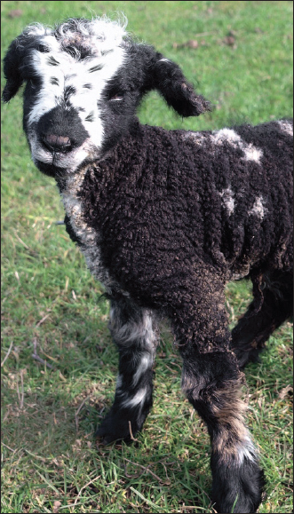
Llamas often make excellent pets and are a great source of wooly fiber (their wool can be spun into yarn). Llamas are being kept more and more by people in the United States as companion animals, sources of fiber, pack and light plow animals, therapy animals for the elderly, “guards” for other backyard animals, and good educational tools for children. Llamas have an even temperament and are very intelligent. Their intelligence and gentle nature make them easy to train, and their hardiness allows them to thrive well in both cold and warmer climates (although they can have heat stress in extremely hot and humid parts of the country).
Before you decide to purchase a llama or two for your yard, check your state requirements regarding livestock. In some places your property must also be zoned for livestock.
Llamas come in many different colors and sizes. The average adult llama is between 5½ and 6 feet tall and weighs between 250 and 450 pounds. Llamas, being herd animals, like the company of other llamas, so it is advisable that you raise a pair to keep each other company. If you only want to care for one llama, then it would be best to also have a sheep, goat, or other animal that can be penned with the llama for camaraderie. Although llamas can be led well on a harness and lead, never tie one up as it could potential break its own neck trying to break free.
Llamas tend to make their own communal dung heap in a particular part of their pen. This is quite convenient for cleanup and allows you to collect the manure, compost it, and use it as a fertilizer for your garden.
Feeding Llamas
Llamas can subsist fairly well on grass, hay (an adult male will eat about one bale per week), shrubs, and trees, much like sheep and goats. If they are not receiving enough nutrients, they may be fed a mixture of rolled corn, oats, and barley, especially during the winter season when grazing is not necessarily available. Make sure not to overfeed your llamas, though, or they will become overweight and constipated. You can occasionally give cornstalks to your llamas as an added source of fiber, and you may add mineral supplements to the feed mixture or hay if you want. Salt blocks are also acceptable to have in your llama pen, and a constant supply of fresh water is necessary. Nursing female llamas should receive a grain mixture until the cria (baby) is weaned.
Be sure to keep feed and hay off the ground. This will help ward off parasites that establish themselves in the feed and are then ingested by the llamas.
Housing Your Llamas
Llamas may be sheltered in a small stable or even a converted garage. There should be enough room to store feed and hay, and the shelter should be able to be closed off during wet, windy, and cold weather. Llamas prefer light, open spaces in which to live, so make sure your shed or shelter has large doors and/or big windows. The feeders for the hay and grain mixture should be raised above the ground. Adding a place where a llama can be safely restrained for toenail clippings and vet checkups will help facilitate these processes but is not absolutely necessary.
The llamas should be able to enter and exit the shelter easily and it is a good idea to build a fence or pen around the shelter so they do not wander off. A fence about four feet tall should be enough to keep your llamas safe and enclosed. If you happen to have both a male and female llama, it is necessary to have separate enclosures for them to stave off unwanted pregnancies.
Toenail Trimming
Llamas need their toenails to be trimmed so they do not twist and fold under the toe, making it difficult for the llama to move around. Laying gravel in the area where your llamas frequently walk will help to keep the toenails naturally trimmed, but if you need to cut them, be careful not to cut too deeply or you may cause the tip of the toe to bleed and this could lead to an infection in the toe. Use shears designed for this purpose to cut the nails. Use one hand to hold the llama’s “ankle” just above where the foot bends. Hold the clippers in your other hand, cutting away from the foot toward the tip of the nail. The nail’s are easiest to clip in the early morning or after a rain, since the wetness of the ground will soften them.
Shearing
It is important to groom and shear your llama, especially during hot weather. Brushing the llama’s coat to remove dirt and keep it from matting will not only make your llamas look clean and healthy but it will improve the quality of their coats. If you want to save the fibers for spinning into yarn, it is best to brush, comb, and use a hair dryer to remove any dust and debris from the llama’s coat before you begin shearing.
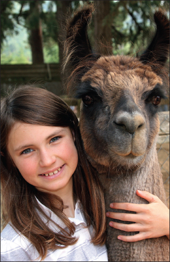
Shearing is not necessarily difficult, but if you are a first-time llama owner, you should ask another llama farmer to teach you how to properly shear your llama. In order to shear your llama, you can purchase battery-operated shears to remove the fibers for sale or use. Different llamas will respond in different ways to shearing. Try holding the llama with a halter and lead in a smaller area to begin the shearing process. Do not completely remove the llama from any other llamas you have, though, as their presence will help calm the llama you are shearing. It is best to have another person with you to aid in the shearing (to hold the llama, give it treats, and offer any other help). When shearing a llama, don’t shear all the way down to the skin. Allowing a thin coating of hair to cover the llama’s body will help protect it from the sun and from being scratched when it rolls in the dirt.
Start by shearing a flat top the length of the llama’s back. Next, taking the shears in one hand, move them in a downward position to remove the coat. Shear a strip the length of the neck from the chin to the front legs about 3 inches wide to help cool the llama. Shearing can take a long time, so it may be necessary for both you and the llama to take a break. Take the llama for a quiet walk and allow it to go to the bathroom so it will not become antsy during the rest of the shearing process.
Collect the sheared fibers in a container and make sure you are working on a clean floor so you can collect any excess fibers and use them for spinning. Do not store the fiber in a plastic bag, as moisture can easily accumulate, ruining the fiber and making it unusable for spinning.
Caring for the Cria
Baby llamas, called cria, require some additional care in their first few days of life. It is important for the cria to receive the colostrum milk from their mothers, but you may need to aid in this process. Approach the mother llama and pull gently on each teat to remove the waxy plugs covering the milk holes. Sometimes, you may need to guide the cria into position under its mother in order for it to start nursing.
Weigh the cria often (at least for the first month) to see that it’s gaining weight and growing strong and healthy. A bathroom scale, hanging scale, or larger grain scale can be used for this.
If the cria seems to need extra nourishment, goat or cow milk can be substituted during times when the mother llama cannot produce enough milk for the cria. Feed this additional milk to the cria in small doses, several times a day, from a milking bottle.
Diseases
Llamas are prone to getting worms and should be checked often to make sure they do not have any of these parasites. There is special worming paste that can be mixed in with their food to prevent worms from infecting them. You should also establish a relationship with a good veterinarian who knows about caring for llamas and can determine if there are any other vaccinations necessary in order to keep your llamas healthy. Other diseases and pests that can affect llamas are tuberculosis, tetanus, ticks, mites, and lice.
Using Llama Fibers
Llama fiber is unique from other animal fibers, such as sheep’s wool. It does not contain any lanolin (an oil found in sheep’s wool); thus, it is hypoallergenic and not as greasy. How often you can shear your llama will depend on the variety of llama, its health, and environmental conditions. Typically, though, every year llamas grow a fleece that is 4 to 6 inches long and that weighs between 3 and 7 pounds. Llama fiber can be used like any other animal fiber or wool, making it the perfect substitute for all of your fabric and spinning needs.
Llama fiber is made up of two parts: the undercoat (which provides warmth for the llama) and the guard hair (which protects the llama from rain and snow). The undercoat is the most desirable part to use due to its soft, downy texture, while the coarser guard hair is usually discarded.
Gathering llama hair is easy. To harvest the fiber, you must shear the llama. However, the steps involved in shearing when you are gathering the fiber are slightly different than when you are simply shearing to keep the llama cooler in the summer months. To shear a llama for fiber collection:
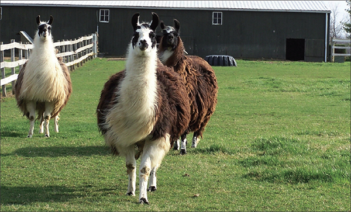
1. Clean the llama by blowing and brushing until the coat is free from dirt and debris.
2. Wash the llama. Be sure to rinse out all of the soap from the hair and let the llama air-dry.
3. You can use scissors or commercial clippers to shear the llama. Start at the top of the back, behind the head and neck and work backwards. If using clippers, sheer with long sweeping motions, not short jerky ones. If using scissors, always point them downward. Leave about an inch of wool on the llama for protection against the sun and insect bites. You can sheer just the area around the back and belly (in front of the hind legs and behind the front legs) if your main purpose is to offer the llama relief from the heat. Or you can sheer the entire llama—from just below the head, down to the tail—to get the most wool. Once the shearing is complete, skirt the fleece by removing any little pieces or belly hair from the shorn fleece.
The fiber can be hand-processed or sent to a mill (though sending the fibers to a mill is much more expensive and is not necessary if you have only one or two llamas). Processing the fiber by hand is definitely more cost-effective but you will initially need to invest in some equipment (such as a spinning wheel, drop spindle, or felting needle).
To process the fiber by hand:
1. Pick out any remaining debris and unwanted (coarse) fibers.
2. Card the fiber. This helps to separate the fiber and will make spinning much easier. To card the fiber, put a bit of fiber on one end of the cards (standard wool cards do the trick nicely) and gently brush it until it separates. This will produce a rolag (log) of fiber.
3. Once the fiber is carded, you can use it in a few different ways:
a. Wet felting: To wet felt, lay the fiber out in a design between two pieces of material and soak it in hot, soapy water. Then, agitate the fiber by rubbing or rolling it. This will cause it to stick together. Rinse the fiber in cold water. When it dries, you will have produced a strong piece of felt that can be used in many crafting projects.
b. Needle felting: For this type of manipulation, you will need a felting needle (available at your local arts and crafts or fabric store). Lay out a piece of any material you want over a pillow or Styrofoam piece. Place the fiber on top of the material in any design of your choosing. Push the needle through the fiber and the bottom material and then gently draw it back out. Continue this process until the fiber stays on the material of its own accord. This is a great way to make table runners or hanging cloths using your llama fiber.
c. Spinning: Spinning is a great way to turn your llama fiber into yarn. Spinning can be accomplished by using either a spinning wheel or drop spindle, and a piece of fiber that is either in a batt, rolag, or roving. A spinning wheel, while larger and more expensive, will easily help you to turn the fiber into yarn. A drop spindle is convenient because it is smaller and easier to transport, and if you have time and patience, it will do just as good a job as the spinning wheel. To make yarn, twist two or more pieces of spun wool together.
d. Other uses: Carded wool can also be used to weave, knit, or crochet.
If you become very comfortable using llama fiber to make clothing or other craft items, you may want to try to sell these crafts (or your llama fiber directly) to consumers. Fiber crafts may be particularly successful if sold at local craft markets or even at farmers’ markets alongside your garden produce.
Raising dairy cows is difficult work. It takes time, energy, resources, and dedication. There are many monthly expenses for feeds, medicines, vaccinations, and labor. However, when managed properly, a small dairy farmer can reap huge benefits, like extra cash and the pleasure of having fresh milk available daily.
Breeds
There are thousands of different breeds of cows, but what follows are the three most popular breeds of dairy cows.
The Holstein cow has roots tracing back to European migrant tribes almost two thousand years ago. Today, the breed is widely popular in the United States for their exceptional milk production. They are large animals, typically marked with spots of jet black and pure white.
The Ayrshire breed takes its name from the county of Ayr in Scotland. Throughout the early nineteenth century, Scottish breeders carefully crossbred strains of cattle to develop a cow well suited to the climate of Ayr and with a large flat udder best suited for the production of Scottish butter and cheese. The uneven terrain and the erratic climate of their native land explain their ability to adapt to all types of surroundings and conditions. Ayrshire cows are not only strong and resilient, but their trim, well rounded outline, and red and predominantly white color has made them easily recognized as one of the most beautiful of the dairy cattle breeds.
The Jersey breed is one of the oldest breeds, originating from Jersey of the Channel Islands. Jersey cows are known for their ring of fine hair around the nostrils and their milk rich in butterfat. Averaging to a total body weight of around 900 pounds, the Jersey cow produces the most pounds of milk per pound of body weight of all other breeds.
Housing
There are many factors to consider when choosing housing for your cattle, including budget, preference, breed, and circumstance.
Free stall barns provide a clean, dry, comfortable resting area and easy access to food and water. If designed properly, the cows are not restrained and are free to enter, lie down, rise, and leave the barn whenever they desire. They are usually built with concrete walkways and raised stalls with steel dividing bars. The floor of the stalls may be covered with various materials, ideally a sanitary inorganic material such as sand.
A flat barn is another popular alternative, which requires tie-chains or stanchions to keep the cows in their stalls. However, it creates a need for cows to be routinely released into an open area for exercise. It is also very important that the stalls are designed to fit the physical characteristics of the cows. For example, the characteristically shorter Jersey cows should not be housed in a stall designed for much larger Holsteins.
A compost-bedded pack barn, generally known as a compost dairy barn, allows cows to move freely, promising increased cow comfort. Though it requires exhaustive pack and ventilation management, it can notably reduce manure storage costs.
Grooming
Cows with sore feet and legs can often lead to losses from milk production, diminished breeding efficiency, and lameness. Hoof trimming is essential to help prevent these outcomes, though it is often very labor intensive, allowing it to be easily neglected. Hoof trimming should be supervised or taught by a veterinarian until you get the hang of it.
A simple electric clipper will keep your cows well-groomed and clean. Mechanical cow brushes are another option. These brushes can be installed in a free-stall dairy barn, allowing cows to groom themselves using a rotating brush that activates when rubbed against.
To milk a cow, sit on a stool and wash the udders with warm water. Place a pail under the teats and begin squeezing the top of the teat with the thumb and forefinger. Tighten the other fingers, gently squeezing downward. Release and repeat rhythmically until the milk slows and the udder is soft to the touch.
Feeding and Watering
In the summer months, cows can receive most of their nutrition from grazing, assuming there is plenty of pasture. You may need to rotate areas of pasture so that the grass has an opportunity to grow back before the cows are let loose in that area again. Grazing pastures should include higher protein grasses, such as alfalfa, clover, or lespedeza. During the winter, cows should be fed hay. Plan to offer the cows 2 to 3 pounds of high-quality hay per 100 pounds of body weight per day. This should provide adequate nutrition for the cows to produce 10 quarts of milk per day, during peak production months. To increase production, supplement feed with ground corn, oats, barley, and wheat bran. Proper mixes are available from feed stores. Allowing cows access to a salt block will also help to increase milk production.
Water availability and quantity is crucial to health and productivity. Water intake varies, however it is important that cows are given the opportunity to consume a large amount of clean water several times a day. Generally, cows consume 30 to 50 percent of their daily water intake within an hour of milking. Water quality can also be an issue. Some of the most common water quality problems affecting livestock are high concentrations of minerals and bacterial contamination. Send out 1 to 2 quarts of water from the source to be tested by a laboratory recommended by your veterinarian.
If you intend to run an organic dairy, cows must receive feed that was grown without the use of pesticides, commercial fertilizers, or genetically-modified ingredients along with other restrictions.
Breeding
You may want to keep one healthy bull for breeding. Check the bull for STDs, scrotum circumference, and sperm count before breeding season begins. The best cows for breeding have large pelvises and are in general good health. An alternative is to use the artificial insemination (A. I.) method. There are many advantages to A. I., including the prevention of spreading infectious genital diseases, the early detection of infertile bulls, elimination of the danger of handling unruly bulls, and the availability of bulls of high genetic material. The disadvantage is that implementing a thorough breeding program is difficult and requires a large investment of time and resources. In order to successfully execute an A. I. program, you may need a veterinarian’s assistance in determining when your cows are in heat. Cows only remain fertile for twelve hours after the onset of heat, and outside factors such as temperature, sore feet, or tie-stall or stanchion housing can drastically hinder heat detection.
Calf Rearing
The baby calf will be born approximately 280 days after insemination. Keep an eye on the cow once labor begins, but try not to disturb the mother. If labor is unusually long (more than a few hours), call a veterinarian to help. It is also crucial that the newborns begin to suckle soon after birth to receive ample colostrum, the mother’s first milk, after giving birth. Colostrum is high in fat and protein with antibodies that help strengthen the immune system, though it is not suitable for human consumption. When you choose to wean the calf will depend on whether the calf is being raised for dairy or meat, forage availability, and the condition of both the mother and calf. It's important to research the breed you are raising and consider the situation of your own farm and the needs of the particular animals when deciding on when to wean and whether to separate the mother from the calf. contracting any germs from other animals.
You can teach the calf to drink from a bucket by gently pulling its head toward the pail. A calf should consume about 1 quart of milk for every 20 pounds of body weight. A calf starter can be used to help ensure proper ruminal development. You can find many types of starters on the market, each meeting the nutritional requirements for calves. Begin milking young cows as soon as they are separated from the mother. This will get them used to the process while they are small enough to be more manageable.
Common Diseases
Pinkeye and foot rot are two of the most prevalent conditions affecting all breeds of cattle of all ages year-round. Though both diseases are non-fatal, they should be taken seriously and treated by a qualified veterinarian.
Wooden tongue occurs worldwide, generally appearing in areas where there is a copper deficiency or the cattle graze on land with rough grass or weeds. It affects the tongue, causing it to become hard and swollen so that eating is painful for the animal. Surgical intervention is often required.
Brucellosis or bangs is the most common cause of abortion in cattle. The milk produced by an infected cow can also contain the bacteria, posing a threat to the health of humans.
Pigs can be farm-raised on a commercial scale for profit, in smaller herds to provide fresh, homegrown meat for your family or to be shown and judged at county fairs or livestock shows. Characterized by their stout bodies, short legs, snouts, hooves, and thick, bristle-coated skin, pigs are omnivorous, garbage-disposing mammals that, on a small farm, can be difficult to turn a profit on but yield great opportunities for fair showmanship and quality food on your dinner table.
Breeds
Pigs of different breeds have different functionalities—some are known for their terminal sire (the ability to produce offspring intended for slaughter rather than for further breeding) and have a greater potential to pass along desirable traits, such as durability, leanness, and quality of meat, while others are known for their reproductive and maternal qualities. The breed you choose to raise will depend on whether you are raising your pigs for show, for profit, or to put food on your family’s table.
Eight Major U.S. Pig Breeds
1. Yorkshire—Originally from England, this Large White breed of hog has a long frame, comparable to the Landrace. They are known for their quality meat and mothering ability and are likely the most widely distributed breed of pig in the world. Farmers will also find that the Yorkshire breed generally adapts well to confinement.
PIG TERMINOLOGY
| pig, hog, or swine | Refers to the species as a whole or any member thereof. |
| shoat or piglet (or “pig” when species is referred to as “hog”) | Any unweaned or immature young pigs. |
| sucker | A pig between birth and weaning. |
| runt | An unusually small and weak piglet. Often one per litter. |
| boar or hog | A male pig of breeding age. |
| barrow | A male pig castrated before reaching puberty. |
| stag | A male pig castrated later in life. |
| gilt | A young female not yet mated (farrowed) or has birthed fewer than two litters. |
| sow | An active breeding female pig. |
2. Landrace—This white-haired hog is a descendent from Denmark and is known for producing large litters, supplying milk, and exhibiting good maternal qualities. The breed is long-bodied and short-legged with a nearly flat arch to its back. Its long, floppy ears are droopy and can cover its eyes.
3. Chester—Like the Landrace, this popular white hog is known for its mothering abilities and large litter size. Originating from cross breeding in Pennsylvania, Chester hogs are medium-sized and solid white in color.
4. Berkshire—Originally from England, the black and white Berkshire hog has perky ears and a short, dished snout. This medium-sized breed is known for its siring ability and quality meat.
5. Duroc—Ranging from solid colors of light gold to dark red, the strong built, Durocs are known for their rapid growth and ultra efficient feed to meat conversion. This large breed is also hailed for its tasty meat.
6. Poland China—Known for often reaching the maximum weight at any age bracket, this black and white breed is of the meaty variety.
7. Hampshire—A likely descendent of an Old English breed, the Hampshire is one of America’s oldest original breeds. Characterized by a white belt circling the front of their black bodies, this breed is known for its hardiness and high-quality meat.
8. Spot—Known for producing pigs with high growth rates, this black and white spotted hog gains weight quickly while maintaining a favorable feed efficiency. Part of the Spot’s ancestry can be traced back to the Poland China breed.
Housing Pigs
Keeping your pigs happy and healthy and preventing them from wandering off requires two primary structures: a shelter and a sturdy fence. A shelter is necessary to protect your pigs from inclement weather and to provide them with plenty of shade, as their skin is prone to sunburns. Shelters can be relatively simple three-sided, roofed structures with slanted, concrete flooring to allow you to spray away waste with ease. To help keep your pigs comfortable, provide them with enough straw in their shelter and an area to make a wallow—a muddy hole they can lie in to stay cool.
TIPS FOR SELECTING BREEDER SOWS
• Look for well-developed udders on a gilt (a minimum of six pairs of teats, properly spaced and functional).
• Do not choose those with inverted teats which do not secrete milk, and do not choose sows that are otherwise unable to produce milk.
• Opt for longer-bodied sows (extra space promotes udder development).
• Look for a uniform width from the front to the rear.
• Check for good development in the ham, loin, and shoulder regions to better assure good breeding.
• Choose the biggest animals within a litter.
• Choose female breeders from litters of eight or more good-sized piglets that have high rates of survivability.
• Choose hardy pigs from herds raised in well-sanitized environments and avoid breeding any pigs with physical abnormalities.
Because pigs will use their snouts to dig and pry their way through barriers, keeping these escape artists fenced in can post a challenge. “Hog wire,” or woven fence wire, at least 40 inches high is commonly used for perimeter fencing. You can line the top and especially the bottom of your fence with a strand of barbed or electric wire to discourage your pigs from tunneling their way through. If you use electric wiring, you may have a difficult time driving your herd through the gate. Covering the gate with non-electric panels using woven wire, metal, or wood can make coaxing your pigs from the pasture an easier task.
Feeding Your Pigs
Pigs are of the omnivorous variety, and there isn’t much they won’t eat. Swine will consume anything from table and garden scraps to insects and worms to grass, flowers, and trees. Although your pigs won’t turn their snouts up to garbage, a cost-effective approach to assuring good health and a steady growth rate for your pigs is to supply farm grains (mixed at home or purchased commercially), such as oats, wheat, barley, soybeans, and corn. Corn and soybean meal are a good source of energy that fits well into a pig’s low fiber, high protein diet requirements. For best results, you should include protein supplements and vitamins to farm grain diets.
As pigs grow, their dietary needs change, which is why feeding stages are often classified as starter, grower, and finisher. Your newly weaned piglets make up the starting group, pigs 50–125 lbs are growing, and those between 125- and the 270-lb market weight are finishing pigs.
As your pigs grow, they will consume more feed and should transition to a less dense, reduced-protein diet. You should let your pigs self-feed during every stage. In other words, allow them to consume the maximum amount they will take in a single feeding. Letting your pigs self-feed once or twice a day allows them to grow and gain weight quickly.
Another essential part of feeding is to make sure you provide a constant supply of fresh, clean water. Your options range from automatic watering systems to water barrels. Your pigs can actually go longer without feed than they can without water, so it’s important to keep them hydrated.
Diseases
You can prevent the most common pig diseases from affecting your herd by asking your veterinarian about the right vaccination program. Common diseases include E. Coli—a bacteria typically caused by contaminated fecal matter in the living environment that causes piglets to experience diarrhea. You should vaccinate your female pigs for E. Coli before they begin farrowing.
Another common pig disease is Erysipelas, which is caused by bacteria that pigs secrete through their saliva or waste products. Heart infections or chronic arthritis are possible ailments the bacteria causes in pigs that can lead to death. You should inoculate pregnant females and newly-bought feeder pigs to defend against this prevalent disease.
Other diseases to watch out for are Atrophic Rhinitis, characterized by inflammation of a pig’s nasal tissues; Leptospirosis, an easily spreadable bacteria-borne disease; and Porcine Parvovirus, an intestinal virus that can spread without showing symptoms. Consult your veterinarian to discuss vaccinating against these and other fast-spreading diseases that may affect your herd.
Meat animals may be raised and the meat cured at home for much less than the cost of purchased meat. By raising your own meat, you can ensure that the animals are raised and slaughtered humanely and can avoid the hormones and other health hazards found in most commercially-raised meats.
Choosing Animals to Slaughter
Health
In selecting animals for butchering, health should have first consideration. Even though the animal has been properly fed and carries a prime finish, the best quality of meat can not be obtained if the animal is unhealthy; there is always some danger that disease may be transmitted to the person who eats the meat. The keeping quality of the meat is always impaired by fever or other derangement.
Condition
An animal in medium condition, gaining rapidly in weight, yields the best quality of meat. Do not kill animals that are losing weight. A reasonable amount of fat gives juiciness and flavor to the meat, but large amounts of fat are objectionable.
Quality
The breeding of animals plays an important part in producing carcasses of high quality. Selection, long-continued care, and intelligent feeding will produce meat of desirable quality. Smooth, even, and deeply fleshed hogs yield nicely marbled meats.
Figure 1.—Tools for killing and dressing hogs. A, meat saw; B, 14-inch steel; C, Cutting knife; D, hog book; E, 8-inch sticking knife; F, bell-shaped stick scraper; G, separate parts of stick scraper; H, gambrel.
Age for Killing
The meat from young hogs or cows lacks flavor and is watery, and that from old hogs generally is very tough. However, if older animals are properly fattened before slaughter, the meat will be improved. Hogs or cows may be killed for meat any time after eight weeks of age, but the most profitable age at which to slaughter is between eight and twelve months.
Treatment Before Slaughter
It is easiest to hold cows and pigs entirely without feed for twelve to eighteen hours prior to slaughtering, but they should have all the fresh water they will drink. This treatment promotes the elimination of the usual waste products from the system; it also helps to clear the stomach and intestines of their contents, which in turn facilitates the dressing of the carcass and the cleanly handling and separation of the viscera. No animal should be whipped or excited prior to slaughter.
Equipment for Slaughtering
For cutting up the meat, these old-fashioned tools still get the job done: A straight sticking knife, a cutting knife, a 14-inch steel, a hog hook, a bell-shaped stick scraper, a gambrel, and a meat saw (fig. 1). More than one of each of these tools may be necessary if many hogs are to be slaughtered and handled to best advantage. A barrel is a convenient receptacle in which to scald a hog. The barrel should be placed at an angle of about 45 degrees at the end of a table or platform of proper height. The table and barrel should be fastened securely to protect the workmen. A block and tackle will reduce labor. All the tools and appliances should be in readiness before beginning.
Killing and Dressing
A .22 caliber gun is best for killing cows and pigs. Male animals should be castrated before slaughtering. If you kill a pig in its pen, immediately afterward throw a noose around its neck and drag it outside to slit the throat while the heart is still beating. Cows should be slaughtered outside if they’re too large to drag. To sever the main veins and arteries, stick a knife into the throat and cut outward, through the skin. If slaughtering a pig, wash it down at this point.
Use a meat saw to remove the animal’s head. Cut slits in the Achilles tendons and insert the gambrel to hoist the animal up to a convenient height, using a pulley or a come-along as needed. The animal should be hanging upside down. Remove the feet at the joint.
Using a sharp, short knife, cut into the slit in the Achilles tendons and down the legs, stopping at the center line. Slice from the center line down to the animal’s neck. Begin to remove the skin, starting where the leg meets the center line and working outward. Leave as much fat intact as possible. Continue slicing around to the front of the leg, working toward the tailbone. Pull the tail sharply to separate the vertebrae.
Cut out the anus in order to remove the intestines. Cut down through the sternum through the belly, and finally between the legs. Be careful not to rupture the bladder. Place a bucket under the animal to catch all the innards. To remove the diaphragm and the heart you’ll need to sever in from the surrounding connective tissue. Finally, remove the windpipe from the neck.
Pork should hang one night in a cold or refrigerated area. Beef can benefit from longer refrigerated aging.
Pigs should be halved before the meat is divided into portions. Cows should be quartered.
Dividing the Meat
Shoulder
Cut off the front foot about 1 inch below the knee. The shoulder cut is made through the third rib at the breastbone and across the fourth. Remove the ribs from the shoulders, also the backbone which is attached. Cut close to the ribs in removing them so as to leave as much meat on the shoulder as possible. These are shoulder or neck ribs and make an excellent dish when fried or baked. If only a small quantity of cured meat is desired, the top of the shoulder may be cut off about one-third the distance from the top and parallel to it. The fat of the shoulder top may be used for lard and the lean meat for steak or roasts. It should be trimmed smoothly. In case the shoulders are very large divide them crosswise into two parts. This enables the cure mixture to penetrate more easily and therefore lessens the danger of souring. The fat trimmings should be used for lard and the lean trimmings for sausages.
The ham is removed from the middling by cutting just at the rise in the backbone and at a right angle to the shank, The loin and fatback are cut off in one piece, parallel with the back just below the tenderloin muscle on the rear part of the middling. Remove the fat on the top of the loin, but do not cut into the loin meat. The lean meat is excellent for canning or it may be used for chops or roasts and the fatback for lard. The remainder should then be trimmed for middling or bacon. Remove the ribs cutting as close to them as possible. If it is a very large side, it may be cut into two pieces. Trim all sides and edges as smoothly as possible.
Cut off the foot 1 inch below the hock joint. All rough and hanging pieces of meat should be trimmed from the ham. It should then be trimmed smoothly, exposing as little lean meat as possible, because the curing hardens it. All lean trimmings should be saved for sausage and fat trimmings for lard. The other half of the carcass should be cut up in similar manner.
Loins
Separate the loin from the belly by sawing through the ribs, starting at the point of greatest curvature of the fourth rib. Skin the fat from the loin, leaving the lean muscle barely covered with the fat. The loins can be boned out and used for sausage if a large amount of that is desired, or if the weather will not permit holding them as fresh meat they can be given a middle cure as boneless loins. The loin is best adapted for the pork (loin) roast or for pork chops. The latter are cut in such a way as to have the rib end in each alternate piece or chop.
Bacon comes from the pork belly.
Meat trimmings and fat trimmings
After the carcass has been cut up and the pieces are trimmed and shaped properly for the curing process, there are many pieces of lean meat, fat meat, and fat which can be used for making sausage and lard. The fat should be separated from the lean and used for lard. The meat should be cut into convenient-sized pieces to pass through the grinder.
Rendering lard
The leaf fat makes lard of the best quality. The back strip of the side also makes good lard, as do the trimmings of the ham, shoulder, and neck. Intestinal or gut fat makes an inferior grade and is best rendered by itself. This should be thoroughly washed and left in cold water for several hours before rendering, thus partially eliminating the offensive odor. Leaf fat, back strips, and fat trimmings may be rendered together. If the gut is included, the lard takes on a very offensive odor.
First, remove all skin and lean meat from the fat trimmings. To do this cut the fat into strips about 1 ½ inches wide, then place the strip on the table, skin down, and cut the fat from the skin. When a piece of skin large enough to grasp is freed from the fat, take it in the left hand and with the knife held in the right hand inserted between the fat and skin, pull the skin. If the knife is slanted downward slightly, this will easily remove the fat from the skin. The strips of fat should then be cut into pieces 1 or 1 ½ inches square, making them about equal in size so that they will try out evenly.
Pour into the kettle about a quart of water, then fill it nearly full with fat cuttings. The fat will then heat and bring out the grease without burning. Render the lard over a moderate fire. At the beginning the temperature should be about 160°F, and it should be increased to 240°F. When the cracklings begin to brown, reduce the temperature to 200°F or a little more, but not to exceed 212°F, in order to prevent scorching. Frequent stirring is necessary to prevent burning. When the cracklings are thoroughly browned, and light enough to float, the kettle should be removed from the fire. Press the lard from the cracklings. When the lard is removed from the fire allow it to cool a little. Strain it through a muslin cloth into the containers. To aid cooling, stir it, which also tends to whiten it and make it smooth.
Lard which is to be kept for a considerable time should be placed in air-tight containers and stored in the cellar or other convenient place away from the light, in order to avoid rancidity. Fruit jars make excellent containers for lard, because they can be completely sealed. Glazed earthenware containers, such as crocks and jars, may be also be used. All containers should be sterilized before filling, and if covers are placed on the crocks or jars, they also should be sterilized before use. Lard stored in air-tight containers away from the light has been found to keep in perfect condition for a number of years.
A slab of pork lard.
When removing lard from a container for use, take it off evenly from the surface exposed. Do not dig down into the lard and take out a scoopful, as that leaves a thin coating around the sides of the container, which will become rancid very quickly through the action of the air.
Curing Pork
The first essential in curing pork is to make sure that the carcass is thoroughly cooled, but meat should never be allowed to freeze either before or during the period of curing.
The proper time to begin curing is when the meat is cool and still fresh, or about twenty-four to thirty-six hours after killing. See page 145 for pork curing suggestions.
An old-fashioned kettle for rendering lard.
SELECTING QUALITY MEAT
As a general rule, the best meat is that which is moderately fat. Lean meat tends to be tough and tasteless. Very fat meat may be good, but is not economical. The butcher should be asked to cut off the superfluous suet before weighing it.
1. Beef. The flesh should feel tender, have a fine grain, and a clear red color. The fat should be moderate in quantity, and lie in streaks through the lean. Its color should be white or very light yellow. Ox beef is the best, heifer very good if well fed, cow and bull, decidedly inferior.
2. Mutton. The flesh, like that of beef, should be a good red color, perhaps a shade darker. It should be fine-grained, and well mixed with fat, which ought to be pure white and firm. The mutton of the black-faced breed of sheep is the best, and may be known by the shortness of the shank; the best age is about five years, though it is seldom to be had so old. Whether mutton is superior to either ram or ewe, and may be distinguished by having a prominent lump of fat on the broadest part of the inside of the leg. The flesh of the ram has a very dark color and is of a coarse texture; that of the ewe is pale, and the fat yellow and spongy.
3. Veal. Its color should be white, with a tinge of pink; it ought to be rather fat, and feel firm to the touch. The flesh should have a fine delicate texture. The leg-bone should be small; the kidney small and well covered with fat. The proper age is about two or three months; when killed too young it is soft, flabby, and dark colored. The bull-calf makes the best veal, though the cow-calf is preferred for many dishes on account of the udder.
4. Lamb. This should be light-colored and fat, and have a delicate appearance. The kidneys should be small and imbedded in fat, the quarters short and thick, and the knuckle stiff. When fresh, the vein in the fore quarter will have a bluish tint. If the vein look green or yellow, it is a certain sign of staleness, which may also be detected by smelling the kidneys.
5. Pork. Both the flesh and the fat must be white, firm, smooth, and dry. When young and fresh, the lean ought to break when pinched with the fingers, and the skin, which should be thing, yield to the nails. The breed having short legs, thick neck, and small head, is the best. Six months is the right age for killing, when the leg should not weigh more than 6 or 7 lbs.